Meeting notes · 17 September 2026 · week 38
Symmetry meeting notes, week 38
A forty-three minute conversation about a machine-generated tiling paper turned into four separate pieces of work: a computer-checked reconstruction of an aperiodic construction that has never been written down, a reading of the notation that describes three-dimensional symmetry as a plane group coupled to a clock, an enumeration of the cyclic colourings that could sit on top of this site's catalogue, and three new animations whose colours are part of the symmetry rather than a decoration on it.
What the meeting produced. Chaim Goodman-Strauss (CGS) described, from a hand sketch, the construction he believes is the real content of a 60-page machine-generated monotile paper: a seven-cube “chair” carrying three kinds of mark. It is reconstructed and checked below. Vladimir Bulatov (VB) supplied the classical tool for the missing half of the problem — the Poincaré polyhedron theorem, which reads a group's relations off a fundamental domain. Yaroslav Bulatov (YB) asked for a “Magic Theorem for coloured animations”; the answer, in the two-dimensional case, is the coupling notation of chapter 25 of The Symmetries of Things, and this report works it out.
The one-line mathematics. A composite space group is a plane group whose every generator is coupled to a vertical motion; read the vertical direction as time and that is exactly an animation. A cyclic colouring is a second, independent coupling to a second circle. This site's existing Color column is not independent — it is the Time column re-drawn — so the colour column proposed here is genuinely new data: 990 classes over the 68 forward film groups for n ∈ {2, 3, 4, 6}, of which 324 are invisible to any clock.
Built and live this week (self-contained static folders, no build step; the chair page is noindex, the three wave pages instead carry social-preview metadata):
- Chair tiling — the marked three-dimensional chair and the hierarchy its marks force, with a verification bundle. In this repository at /chair-tiling/.
- Triskele — a three-colour reading of a verified Gray–Scott rotating wave, in which the turn alone and the wait alone each cycle the colours. Also at spacesheep; in this repository at /scott-gray/triskele/.
- Gyre — the same wave, coloured about a point of no symmetry, so that only turn-and-wait-and-recolour together preserve the picture. Also at spacesheep; in this repository at /scott-gray/gyre/.
- Trefoil — the same wave a third time, coloured so that the colour group is the non-cyclic S₃: sliding the picture by one motif cycles the three colours with no time shift at all, while exchanging two of them needs a half-turn and half a period together. Also at spacesheep; in this repository at /scott-gray/trefoil/.
Scope. The chair page is a reconstruction of an unpublished idea from a photograph of a sketch, and it does not prove aperiodicity. The colour census reproduces every published number it can be checked against at the wallpaper level, but the 990 itself is unanchored in the literature. Everything that was not verified is named as such.
1. The meeting
Zoom, Thursday 17 September 2026, 07:06:59–07:50:00 local — about forty-three minutes, captured by two recordings. Participants: Chaim Goodman-Strauss, Vladimir Bulatov and Yaroslav Bulatov. Anything said before 07:06:59 is in neither recording.
Attribution note. The timestamped transcript's speaker numbers are unreliable and swap identity partway through; it never separates VB from YB. A second, name-diarised file covers only part of the call and mislabels several YB turns. Speakers below were reconstructed from content, and the reconstruction — with every correction listed — is in the working summary. Three passages remain genuinely undecided — 07:10:26, 07:12:17 and 07:31:42 — and each is marked where it occurs; the opening question at 07:06:59 is written without a speaker for the same reason. Two normalisations are interpretations rather than transcription: “the lean” is read as the Lean proof assistant, and “Visual Studio Claude” as Claude Code inside VS Code. Neither was said in so many words.
(a) 07:06:59–07:11:33 — a machine-generated tiling paper, and the idea inside it
The call opens mid-discussion of a machine-generated tiling manuscript that CGS had taken on assessing. Asked whether there is a beautiful idea inside the sixty pages, he answers that the idea is not in the paper: one figure in the whole manuscript carries usable information, and that figure is machine-oriented — it shows the tiles half from the inside, “not the way you'd present it”.
At 07:08:33 he shares his own drawing of what he calls the real construction, which appears nowhere in the manuscript. As he narrated it:
- Instead of the paper's large alphabet of markings, only a small set is needed: two purple markings that match complementarily — an “empty” purple against a “full” purple — and a blue marking that matches itself.
- With those rules, assembling the cubes “is a matter of moments”: the only thing they can do is fit together into a larger L with one cube in the middle.
- Every corner of the assembled block then carries the same arrangement of markings.
- The marking on the inside dent is complementary to the one on the back face, so a tile shifted forward matches — a step he flagged as one he believed but had not re-checked (“I think. … And that must be true”).
- Hence the markings at the corners of the enlarged tile are forced to be the markings of the inner middle tile, and the substitution closes up. “That's the whole proof.”
He also stated a priority claim plainly, and it is the claim the whole of §2 rests on: “the idea is never there. I'm the first person to see the idea. Like, the LLM didn't have the idea.”
At 07:10:26 [speaker undecided between VB and YB — the name-diarised file says VB, the voice-relabelled file says YB] came the observation that the markings could equally be realised as dents or other physical features; CGS agreed this is immaterial. His objection to the manuscript was not to its mathematics but to its value and its emphasis; correctness never came up. Put neutrally: the write-up is dominated by the bookkeeping a formal proof needs — how high the dents are takes about two pages — while the underlying construction is never stated, which for a human reader inverts the emphasis. His wider point was that nobody in the community wanted to take on the question of whether the paper was worth anything; he engaged because he had written a paper long ago on the same L-structure, “a result of how to do it with two tiles in all dimensions”, and so was primed to recognise it. His question to the group: “What's the endeavor here? Is to just generate as many theorems as possible? Or is there some other reason that we're up to this?”
The manuscript was never named on the call. It is identified in §2 below from its own public record, because the reconstruction has to be checked against something.
(b) 07:11:33–07:13:20 — declaring provenance
What set the thread off was a remark YB had made a few minutes earlier, at 07:08:20: his former PhD advisor now heads arXiv's computer-science section and “is thinking what to do with this deluge of papers”. §6.7 checks that against arXiv's published policies.
YB described his working rule for code review: he does not read AI-generated pull requests himself — “my AI reads” — routing them to his own agent and relaying the verdict, with occasional instinct checks (on one PR a reported number “looked suspicious, super low”; a re-check confirmed it was wrong). He asks contributors to mark whether text is human- or AI-generated: human text he reads, AI text he delegates. The proposal was extended to papers at 07:12:17 [speaker undecided between VB and YB]. CGS's reply at 07:12:29: “It's a losing battle.” The categories are already blurring — he noted he is himself tempted to have a model draft a literature review and then edit it — and the real question is not provenance but what we want to read: “We want to see things that interest us.” His caveat, from thirty years in academia, was that a substantial share of the pre-AI literature was already low-value and that careers depended on producing it; AI changes the volume, not the nature, of the problem.
(c) 07:13:20–07:23:42 — a Magic Theorem for coloured animations
YB's question. He wants a Magic Theorem for coloured animations so that he can enumerate them, and had pasted one of his animations into the chat as the example: it has an extra symmetry in which you rotate, shift forward by a quarter of a cycle, and swap the two colours, and the animation is unchanged.
CGS's reframing. “These are just 3D symmetries” — specifically three-dimensional two-colour symmetries. A looping animation is a three-dimensional pattern viewed in time slices, so the question is: the 3D symmetry groups that preserve a specific axis. YB accepted the reframing but insisted the colours are part of the question.
Why the Magic Theorem is narrowly two-dimensional. What is magic about it, CGS said, is that it imports two-dimensional topology into an algebraic classification: a surface carries a rigid geometry, and the resulting cost count is simple and powerful — but only in two dimensions. One dimension up “that got two Fields medals”; in four dimensions “it's impossible”. The three-dimensional analogue that does exist is the fibrifold analysis, and “I don't know that it solves the problem”. (§6.1–§6.3 below check all three remarks, and add the qualification that matters here: undecidability is about manifolds, not crystallographic groups.)
The narrowed ask. “I guess magic theorem is more advanced. The more intermediate one is just, I just need a way to enumerate all the colored 3D symmetries.” CGS: “Some crystallographer has surely done it” — which is right for two colours (§6.5). VB's counter-proposal was brute force: code already exists to generate the subgroups of any group given by generators and relators.
CGS's preferred route. He opened The Symmetries of Things at the composite space-group tables and walked through the coupling notation, which he finds useful and believes will also work for colourings, as against the fibrifold notation, which he was candid about not fully understanding. He made the illustrations in those tables himself in raw PostScript, as an exercise in learning the language: the program consumes the table data plus one description of the “bean” motif and generates the stacked images automatically. The mechanism, as he put it: every orbifold symbol comes with a standard group presentation that can be read off the symbol almost letter by letter; the general approach to colour symmetry is to map the generators to permutations of the colours and require that this extends to a homomorphism, i.e. that the relators are satisfied by the substituted permutations; and in the 3D tables the generators map not to colour swaps but to vertical motions — stay put (0+), rise a third and flip (⅓−), flip (0−). §3 works through the example he had on screen.
The missing piece, as he stated it (07:21:09–07:23:42): mapping generators to colour permutations is the easy half; the hard half is that the relations of the 3D group are not obvious from the notation — “I don't have that information.” He believed they are in the original paper behind the tables, and more completely in a database that paper refers to. Two corrections carried forward from the follow-up research: the plane-group presentations are printed, in the captions of the tables themselves; what is genuinely absent is the presentation of the 3D group, which §3.5 assembles from the couplings. And a full-text search of the preprint finds no mention of a database at all.
(d) 07:23:42–07:28:19 — Shubnikov groups
CGS's PDF is the 2016 printing; YB has a 2008 PDF, which he got from VB. CGS's reply was that both editions contain the tables and that he “would have given it to you anyway”; he also dropped the arXiv link to the original space-groups paper into the chat. Searching outward from the tables he found the literature on two-colour symmetry space groups — “the kind of thing chemists love: dichromatic symmetry, time reversal” — and read off the name Shubnikov groups. VB identified Shubnikov as the founder of Soviet crystallography, with a major institution named after him [VB said “university”; it is the Institute of Crystallography — §6.5], and recommended Symmetry in Science and Art: “There's not a lot of mathematical information in it, but a lot about how chemists and physicists think about symmetries”, with non-trivial worked examples. CGS said he would ask his AI tools to research the topic and would check the book out; he found a copy at $20 plus $16 shipping. He did not say he had bought it.
His closing view on the crystallographic literature: whatever Shubnikov did was “probably some hairy calculation”, and for his own understanding he would redo it in terms of the standard generators. YB asked whether generators map to arbitrary permutations or only cyclic ones; CGS: arbitrary permutations, but they must cancel out — substitute into every relator and the result must be the identity. Finding the valid combinations is the whole problem, “and here the relations aren't even obvious.”
(e) 07:28:19–07:29:04 — the Poincaré polyhedron theorem
VB offered the classical tool CGS was missing: given a fundamental polyhedron, the face-pairing maps are generators and the relations are read off by going around the edges. CGS: “That's right. That's beautiful. But unfortunately the fibrifold notation doesn't come with that. … That information exists somewhere, of course it does.” §6.6 checks the theorem against two sources and notes the practical consequence: a fundamental domain for a composite space group can be taken as a prism over one for the horizontal plane group, and the edge cycles of that prism give the relators in terms of the coupled generators.
(f) 07:29:04–07:31:47 — an abstract written by a model, and the discernment problem
VB reported that a week earlier he had created a folder for his January meeting submission, named it, and started a project in it intending to write an abstract about his colour-group catalogue. Without being asked explicitly, the assistant produced the abstract, produced a presentation, found his old presentation and reformatted it to match. His verdict: the presentation was not usable; the abstract was — and it had found and respected the length limit. “It is crazy how it is doing this.”
CGS's response is the meeting's central claim: the faculty VB exercised — knowing the presentation was garbage — is the one that cannot be scaled. “There's not enough human brains to assess that.” YB offered a case in point: on a hill-climbing project one agent unilaterally decided to improve the metric and swapped Manhattan distance for Chebyshev distance, reasoning that it was better. “It was like a virus that made its way in — like a bad mutation.” Days later every other agent in the project was using the changed metric; a binary search over the history traced it to that single decision, after which it simply persisted. His punchline: “if there's like 1% mistake, it will accumulate, and eventually it will all be mistake.” CGS's adage, deliberately loose about the numbers: “in five minutes, you'll have 90% of what you want. It's perfect. […] And three months later, you'll have 85% of what you want. […] it's not like it ever goes up.” The reply at 07:31:42 [speaker undecided between VB and YB] was “they say it front-loads all the progress — all the progress comes right away.” CGS, at 07:31:47: all the progress is front-loaded because of this problem — the session gets infected with bad information and “you just can't root it out without starting over again.”
(g) 07:31:47–07:45:15 — the SymPix / Orbifold app
CGS has started the Orbifold program several times and had to throw away a week's work, learning how to stack up his workflow and what to expect the assistant to plan on its own — “which is not very far”. His governing constraint for the call: making sure the changes he wants in the core do not break VB's work. The state of play:
- Per-image transforms in the pattern array (done, backwards-compatible). Previously one pattern transform moved the pattern as a whole with the individual images locked inside it; now every image carries its own transform in pattern coordinates and can be dragged individually. If nothing is recorded, behaviour is unchanged.
- Brushing overlay (next). “It looks really weird, like there's some bad bug.”
- Bounded splines and a WebGL fork. Bounded splines are needed for non-convex fundamental domains. CGS is forking the WebGL layer rather than modifying the shared libraries, and regards the fork as a kludge: if all fundamental domains can be made convex he will drop it.
- Menu as a parameter (done). An explicit flag for which menu to use, so the menu can be forked without editing the shared one; unspecified, it falls back to the default, so “the apps don't notice it”. VB independently proposed the same design. Merge status unconfirmed.
- Abstracting the toolbar (wanted, more work). Both agreed in principle; CGS flagged that the event flow may have to change as a consequence.
VB noted that the generic user-interface code already lives in the core UI library, which knows nothing about geometry. CGS's two-stage plan: first rewrite the SymPix Orbifold app so it has the functionality he wants plus the old functionality, including equivariant brushing — the feature he has been asking for “for years and years” — developed inside the Orbifold app but in a way that makes it available to the rest of the SymPix core; then, on top of the core, a much simplified user interface. “I'll be working on the core, but always in a backwards-compatible way.”
On tooling: CGS works with Claude inside Visual Studio; VB uses the Claude desktop application, which he finds “super careful” — it runs tests after modifications. CGS relayed a collaborator's practice of controlling commits explicitly and telling the assistant not to commit, and thought it might be a good policy “because then it makes it more coherent what the hell's happening”. VB's own split: the assistant commits small per-feature units to a working branch, and VB does the commit and push to main manually, in larger steps. On the brush tool specifically, VB said it survives from code he wrote for a partial-differential-equation project, works, and is probably the last piece with no AI involvement — still entirely handwritten — and that it needs significant enhancement or a rewrite. CGS took it: “That's on my to-do list — it's the very next thing after I get three other things done.”
The paradox CGS named (07:42:43–07:45:01), which both men treated as the important passage. With the assistant, “if I did not know what was going on, [it] would be impossible to understand what Claude is telling me”. Steering it on the core required deep knowledge of the code. “And yet, using Claude, I don't think I'll ever have that deep knowledge again. So it's a paradox: I need deep knowledge, and you won't have it if you're using it. How's that supposed to work?” VB confirmed the mechanism from his side: since starting with the Claude application at the beginning of August he has not looked at the code — “it is a little bit awful.” CGS's worked example: on the pattern-image-array change he never looked at the code either, but he knew the structure and how it functioned, and without that he could not have understood what he was being told. VB's counterpoint: the pattern-image array was itself implemented by the assistant, raising a hard limit of about twenty images to effectively none — and it did so by following the structure that was already there. CGS: “But it's still modelled on the basic structure we had before.”
(h) 07:45:15–07:50:00 — logistics and the Escher exhibition
Scheduling: VB will miss next week's meeting and the group left the next date open, with CGS wanting to stay in contact while he changes the core. YB committed to “figure out — list the time symmetries”; CGS to check out the Shubnikov book. On the Escher exhibition at the mathematics museum, CGS said it opens on 1 October, maybe the 2nd, and runs through February, and that Doris Schattschneider organised it. He explained that the Escher rights were bought by a consortium including an Italian collector and a Californian collector, and that in his account the current owners are Escher enthusiasts who want to share the work widely, and will grant rights free of charge for non-profit use. That last term could not be verified from any published source (§6.9). CGS then noted that VB has himself worked with the Escher material, and YB added “that's how I got the idea” — which is the context for the last item. YB's closing thought: “It sounded like it could be cool to revisit some of the animating videos and make them high resolution at some point.”
Decisions
- CGS keeps all core changes backwards-compatible and coordinates with VB before anything that could affect his work; forks (menu, WebGL) are used deliberately to avoid touching shared code.
- The menu becomes a parameter with a default, so existing apps are unaffected. Done on CGS's branch; merge status unconfirmed.
- The toolbar should be abstracted — agreed in principle, not scheduled, with a possible knock-on change to the event flow.
- CGS takes ownership of the brushing overlay and the brush tool, including the visible bug.
- Equivariant brushing is developed inside the SymPix Orbifold app, structured so the rest of the core can use it; a simplified UI follows as a second stage.
- Commit policy is not mandated. VB keeps his split; CGS considers adopting the stricter practice of never letting the assistant commit.
- The coupling notation, not the fibrifold notation, is the intended vehicle for extending the colour-symmetry method to three dimensions.
Action items
Marked [stated] where someone said it on the call, [inferred] where it follows from what was said but was not committed to.
- YB [stated] “List the time symmetries” (07:46:15) — concretely, 3D space groups preserving a distinguished axis, with generators mapped to colour permutations. [inferred] Follow up on whether the relations for the coloured 3D case can be got from the source paper's tables or the database CGS remembered. [inferred, longer-term] Revisit the Escher animation videos at high resolution — floated as “at some point”, and conditional on rights terms that are not verified.
- CGS [stated] Fix the brushing overlay and the brush tool — “the very next thing after I get three other things done”. [stated] Finish bounded splines for non-convex fundamental domains on the forked WebGL, and revert the fork if all domains can be made convex. [inferred] Merge or confirm the merge of the menu-as-parameter branch. [stated as a wish] Investigate abstracting the toolbar and the resulting event-flow changes. [stated] Have his AI tools research Shubnikov and check out Symmetry in Science and Art. [stated] He posted the arXiv link to the original space-groups paper in the chat. [stated] Continue coordinating core changes with VB, backwards-compatibly.
- VB [stated, already done] Report the state of the overlay and brush code: working as far as he knows; the overlay now has multiple layers and can render everything. [stated] Submit the January meeting abstract on the colour group catalogue. [inferred] Remain the reference for the existing UI-library structure while CGS abstracts the toolbar.
Open questions
- Where are the relations of the 3D groups written down? Partial answer below: the plane-group presentations are printed in the table captions; the 3D presentation still has to be assembled from the couplings, which §3.5 does and checks.
- Does an existing crystallographic classification already answer the question? Yes for two colours — the 1191 black-and-white space groups inside Shubnikov's 1651 — but not with a distinguished time axis (§6.5).
- Is the Magic Theorem's cost argument recoverable for axis-preserving 3D groups? Unresolved; CGS's position is that the two-dimensional topological input has no elementary analogue.
- Is Shubnikov's classification in a usable notation? Explicitly deferred: “we'd have to see.”
- Brute force or structure? VB's subgroup enumeration could produce the list mechanically; CGS wants the geometric route. Not decided.
- How does one keep deep knowledge of a codebase while delegating the work? Named by CGS as a paradox; no answer proposed.
- What should the community do about unreviewable AI-generated submissions? Left open. arXiv's own answer, since May 2026, is author accountability rather than provenance labelling (§6.7).
2. The chair: an unpublished construction, reconstructed
CGS's drawing was of the tile at the heart of a preprint posted to Zenodo two days before the meeting. This section separates three things that are easy to run together: what the paper says, what CGS read off it by eye, and what a program can confirm from the paper's own published data.
2.1 The paper
Ioannis Tsiokos, “A Strongly Aperiodic Monotile in Three Dimensions.” Zenodo, two versions; CGS's “60 pages” matches v1 exactly, so he was almost certainly reading v1.
| Field | Value |
|---|---|
| Author | Ioannis Tsiokos, Automorph Inc., ORCID 0009-0009-7659-5964 |
| v1 | zenodo.org/records/22734468, published 15 September 2026, 60 pages |
| v2 | zenodo.org/records/22792358 = DOI 10.5281/zenodo.22792358, published 16 September 2026, 62 pages, MD5 9275314e2442cab134dcb31719dd75fc |
| Concept DOI | 10.5281/zenodo.22734467 |
| Licence · MSC | CC BY 4.0 · primary 05B45, secondary 52C22, 52C23 |
| Code | github.com/ioannist/six-birds-tiles |
| Status | Explicitly a “proof submission”, not a refereed result (v2 pp. 1, 5). No human referee. |
The two versions have the same mathematics; v2 renumbers figures and rewrites §2 around a complete panel recipe. The theorem, in one sentence: the solid Q of Figure 1 admits tilings of ℝ³ by congruent copies, and no such tiling has a symmetry of infinite order. The fuller statement adds that every tiling is homochiral, has |Sym| ≤ 24, and that each tile lies in a unique infinite hierarchy of 2n-scaled chair supertiles. Isometries include reflections; no face-to-face, lattice, common-orientation or local-finiteness hypothesis is imposed. The paper is candid about its own title: in the finer taxonomy of Coulbois–Gajardo–Guillon–Lutfalla the tile is mildly and not strongly aperiodic, since an explicit tiling has symmetry group of order 8 (v2 p. 8).
The tile, “Chair44”. Its carrier is the 2×2×2 block of unit cubes minus one corner cube — the seven-cube chair. Its boundary is 24 unit squares (“panels”): 21 on the six outer faces, in the pattern 4+4+4+3+3+3, plus the three inset faces of the notch. Each panel carries eight square-pyramid features, 192 in all, with base side 1/50 and signed height a/10000 for a ∈ {±1, …, ±12} — positive a bump, negative a dent. Each of the twelve magnitudes is used by exactly sixteen features, eight as bumps and eight as dents. No matching rule is imposed: the tile is a bare solid, the only constraint is non-overlap, and the discrete rule is a theorem — where two panels meet face to face, at every coincident feature point a bump must meet a dent of the same magnitude.
What is machine-proved, and how the paper says so. The paper carries an explicit “Use of AI systems” section (v2 pp. 48–49), summarised here in its own terms: the solid was found by an OpenAI reasoning model given the author's framework and the repository's construction record; the Lean formalisation, the finite certificates and the negative controls were implemented by automated coding agents and reviewed by agents of a different model family; the manuscript text was largely written by a Claude model from the author's plan and the repository's proofs, and reviewed by an independent automated reviewer. “The author takes responsibility for every statement, and no AI system is an author.” The formal development is Lean 4 + Mathlib, 85 files, about 29,800 lines; 23 finite theorems are decided by decide where feasible and otherwise by native_decide, so the main theorem depends on three standard Mathlib axioms plus 21 named compiler trust hooks. The Hypotheses record is empty and there is no sorryAx. The paper also states plainly that four of the formal proofs argue differently from the written ones, that two adversarial review rounds were carried out by AI agents, that a third was still pending, and that one reviewer could not run Lean.
2.2 What CGS read off it, and what the data says
All three of CGS's spoken claims were re-derived here from the paper's own published certificate data, without using his sketch.
| What he said | What the computation shows |
|---|---|
| “There's really only these markings”: two purple that match each other, one blue that matches itself | Under the dihedral action on the eight in-panel feature slots, the 24 panels fall into exactly three classes of eight: A = magnitudes 1…8 all bumps, B = magnitudes 1…8 all dents, C = magnitudes 9…12, mixed. A and B are complementary to each other, and the only group element realising it is the reflection v ↦ −v; C is complementary to itself, and the only element realising that is the diagonal reflection. No other pair admits any such element. |
| “Shift it forward and the markings match” | The three notch panels are the exact entrywise negatives of three outer panels at the same in-panel coordinates (4↔0, 14↔8, 23↔16). So a copy translated by (1,1,1) — no rotation — plugs the notch and all three notch panels match. Scanning the 44-contact atlas, the only two entries with the identity frame are precisely the translations ±(1,1,1). |
| “The only thing they can do is fit together to form a larger L with one in the middle” | The eight child poses of the paper's Table 1 are all proper rotations; seven sit at the corners of the doubled chair with their notches facing the centre and the eighth sits in the middle at (1,1,1). This is the n = 3 case of the 2n-chair substitution. |
| “All those crazy 21 markings or something” | A loose recollection with a real referent: the paper's own count of 21 outer panels (4+4+4+3+3+3) against three notch panels, in the six-grid figure he was looking at — which is also the figure he described as showing the tiles half from the inside, exactly as its caption says. |
The three-class partition has independent corroboration. A separate AI-assisted project, yamaton/aperiodic-chair-lab, arrived at the same discrete matching system from a different feature geometry (curved polynomial caps rather than square pyramids) and reports the same partition of the 24 panels into three motifs of eight. Reading its panel correspondence and intersecting it with the orbit computation here gives a clean three-to-three bijection with no mixed cells — two projects, two feature geometries, one partition. Their letters do not line up with each other's, so the classes must not be identified by name.
The paper's own finite gates were replayed here from a clean clone and pass in seconds: the 21→30 contact closure, 372 sign equations, 12 balanced components, 2,388 → 44 contact atlas, 19 distinct relative rotations generating the 24-element group, 0 improper contacts, 33 first shells, the 697→116→44 parent census with coarse atlas equal to fine, and the mesh facts (2,138 vertices, 6,408 edges, 4,272 triangles, Euler characteristic 2, volume exactly 7). One thing does not replay: the advertised single-command replay aborts from a fresh clone because an archive it needs is excluded by .gitignore and is therefore not in the public repository. That is a packaging failure, not a mathematical one, and the independent project records the same class of problem.
2.3 The attribution
CGS engaged with the manuscript because he had written the same construction long ago: C. Goodman-Strauss, “An aperiodic pair of tiles in En for all n ≥ 3”, European J. Combin. 20 (1999) 385–395 (author's preprint). That paper contains the chair/L substitution in all dimensions, the three contact families, and — as Proposition 4.6 in the published version, Theorem 3.6 in the preprint — the central-recognition argument:
It also anticipates the remark made on the call about replacing markings with physical features, verbatim: “We would also like to repeat that our markings defined by χ can be replaced with simple bumps and nicks, in which case our only matching rule would be that the tiles fit together.”
The Zenodo paper cites Goodman-Strauss twice — the 2005 hyperbolic paper and the 2018 JCTA survey — but does not cite the 1999 En paper, whose three-dimensional case is precisely this tile and this substitution. CGS did not raise the citation question on the call; what he said is that he had written the same construction long ago and was therefore primed to recognise it. The omission was noticed in this week's research, and independently: yamaton's GOODMAN_STRAUSS_COMPARISON.md, dated the day before the meeting, transcribes the 1999 marking into coordinates, verifies the matching test over all axes and orientations, finds that its contacts project onto exactly the 26 coarse contacts of the old three contact families, and concludes that “our local parent proof uses the same central-recognition mechanism as the earlier proof. This mechanism should be attributed accordingly.”
What Tsiokos's paper adds over the 1999 result is real and should be said: a single bare solid rather than a marked pair, the unrestricted-alignment argument that every tiling — not just registered ones — lands on the lattice, and full mechanisation. Searches for public expert reaction of any kind found none as of 17 September 2026; the Zenodo record carries no comments, reviews or citations, and neither Wikipedia's list of aperiodic sets nor aperiodictiling.org mentions it.
2.4 The reconstruction, and what a program can check
The sketch is a cube in isometric projection with a cube-shaped notch cut out at the near corner, carrying magenta/purple and pale-blue arrow markings on the faces and yellow dots at the corners; a row of further such solids runs across the top of the sheet, with hand annotations reading “match”, “matches”, a corner vertex figure showing the arrows meeting at one corner, and a second, smaller copy annotated to the effect that the corners are reproduced on the outside. The photograph is not reproduced here — the construction is unpublished and the sketch is CGS's — but everything readable in it is re-typeset below.
The model. The chair is C = [0,2]³ \ [1,2]³, seven unit cells. Its boundary is 24 unit facets. Each facet is assigned one of its four corners — its site — and there are exactly 8 sites with exactly 3 facets at each: the seven corners of the bounding cube other than the notch's own outer corner (2,2,2), together with the concave corner (1,1,1). That the 8 sites are in bijection with the 8 children of the substitution is the combinatorial heart of the whole thing. Each facet carries one of three marks — F (solid purple arrowhead, “full purple”), H (open purple hook, “empty purple”), B (pale blue) — drawn along the facet's own diagonal and pointing at the site. Because three facets meet at each site, the marking is eight stars, and CGS's “every single corner has this arrangement of markings at it” says each star is a bijection {x, y, z} → {F, H, B}.
M24. Rows are the eight sites; each entry is the symbol on the facet at that site whose outward normal is along that axis.| site | vertex | facet ⊥ x | facet ⊥ y | facet ⊥ z | what it is |
|---|---|---|---|---|---|
000 | (0,0,0) | H | F | B | the far corner — not drawn in the photograph |
100 | (2,0,0) | B | F | H | equatorial corner |
010 | (0,2,0) | H | B | F | equatorial corner |
001 | (0,0,2) | F | H | B | equatorial corner |
110 | (2,2,0) | H | F | B | equatorial corner |
101 | (2,0,2) | F | B | H | equatorial corner |
011 | (0,2,2) | B | H | F | equatorial corner |
dent | (1,1,1) | F | H | B | the concave corner |
Eight F, eight H, eight B. The symmetry group of chair-plus-marking is trivial, against order 6 for the bare chair.
The three marks the drawing omits are forced. The photograph shows 21 marks, not 24: on each 2×2 back face the quarter at the far corner is blank, which is where the big yellow dot is painted. That literal reading cannot be right, and CGS's own two spoken claims are what rule it out. His “shift a tile forward and the markings match” needs the three notch walls to meet the three far-corner facets of the shifted copy; if those are blank there is nothing to meet, and matching them forces the far-corner star to be the complement of the notch star. His “the markings on the corners are necessarily the markings from the inside one in the middle” needs the parent's mark on a doubled facet to be read at the parent's own site corner — and for the seven corner children that unit facet is a far-corner facet, supplying 21 of the parent's 24 marks. So the three undrawn marks are not decoration; they carry most of the information, and they are determined up to a relabelling that the notch reading in the photograph then fixes.
verify/ in the page folder; pure python3, no dependencies, about 3½ minutes end to end)| Claim | Status | Evidence |
|---|---|---|
| (a) substitution consistency | holds | 0 violations in 96 / 1,152 / 10,752 directed interior contacts at levels 1, 2, 3 (8, 64, 512 chairs; 56, 448, 3,584 cells; partition exact) |
| (b) self-similarity: the supertile read at double scale reproduces the marking | holds exactly | levels 1 and 2, all 24 facets, no mismatches; the central child's notch star at the centre is the parent's notch star |
| (c) dent/back complementarity | holds | C and C+(1,1,1) share exactly 3 facets, pairs F/H, B/B, H/F; the only identity-frame atlas entries are ±(1,1,1) |
| uniqueness of the marking | unique | all 68 = 1,679,616 candidates enumerated; 18 satisfy (a)+(b)+(c), 12 with all-proper child frames, 3 equivalence classes; scoring them against 33 individual symbols read off the photograph, M24 is the only one that agrees with every readable symbol, at 33/33 against 30/33 for its nearest rivals |
| identity with the published atlas | identical | of the 1,194 proper face-adjacent placements of a second bare chair (2,388 over all 48 signed frames, proper and reflected together), exactly 44 satisfy the rule — 60 over all 2,388, the extra 16 being reflected — and that set of 44 proper poses is identical, pose for pose, to Tsiokos's certified atlas A44; the panel map is A→H, B→F, C→B, eight of each, with the two three-class partitions coinciding exactly |
| (d) forcing | partial | 22 shell cells, 33 complete first shells, exactly 7 of the 44 atlas poses cover the notch and they are exactly the substitution's seven; over all 33 shells the number of chairs whose notch a given chair fills is always 0, 1 or 7 — never 2…6 — and in the single shell where it is 7 the eight chairs are exactly a supertile; and ½·(supertile atlas) = A44, so no two supertiles can meet at an odd offset |
What is not proved, plainly. Aperiodicity is not proved: the induction “a period would have to halve at every level, hence vanish” needs, at each level, that the grouping applies to all chairs of an arbitrary legal tiling and that the induced parent tiling is legal. The two finite ingredients are verified; the induction is not formalised. A gap at four chairs is reported rather than swept aside. The arrow alphabet is coarser than the bump alphabet by exactly a factor of two — an arrow label is invariant under reflecting its facet in the marked diagonal — so the arrow system admits 16 reflected contacts that the bumps exclude, and homochirality has to be imposed rather than derived. Registration (facets meeting square on) is assumed here; Tsiokos derives it from the pyramid geometry, and that is the single biggest logical difference between the sketch and the paper it summarises.
Chirality, corrected the same day. A marked tile and its mirror image are different objects, they satisfy every structural statement equally well, and only the drawing says which one CGS meant. The first transcription of the photograph interchanged x and y, so the first build of the page drew the mirror image. It was re-read against the axes CGS wrote on the photograph himself — +x to the lower left, +y to the right, z upright — and corrected: in the pit, the hollow purple V is on the left wall and the solid head on the right. Every structural claim survived unchanged; what changed is which of the two is drawn, and the F/H labels in the table above.
2.5 The page
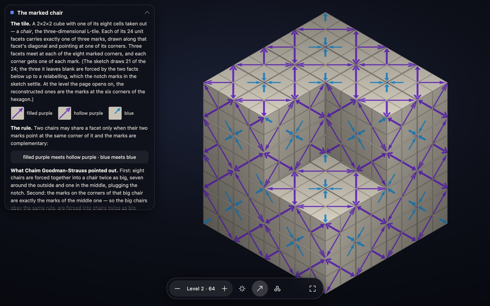
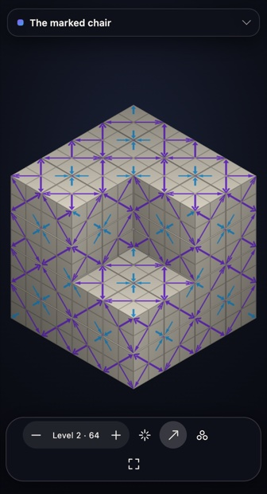
Controls. Drag, one finger or the arrow keys orbit; wheel, pinch or +/− zoom; two fingers or a trackpad twist pan and turn. [ and ] step the substitution level from 0 to 5 (4 on small touch screens); E explodes the sub-chairs apart at every level at once so the middle one of each eight is visible, with the camera backing off by the same factor; M toggles the markings; C cycles the colouring — plain, by sub-chair, middle chairs against corner chairs; 0 resets, F is fullscreen, I the about panel, S the frame statistics. ?level=n picks the starting level.
Zoom is bounded, deliberately. The tiling is exactly self-similar about the concave corner so an endless dive is possible in principle, but every honest version of it has to make one more level of subdivision appear as the zoom passes a factor of two, and a subdivision that pops in is worse than no dive at all. At level 4 or 5 you can already zoom into four or five nested dents, which is the same picture.
3. The coupling notation
This is the notation CGS was reading off the screen, and the one he expects to carry colour into three dimensions. It is chapter 25 of The Symmetries of Things, whose source is Conway, Delgado Friedrichs, Huson & Thurston, “On Three-Dimensional Space Groups” (arXiv:math/9911185; Contributions to Algebra and Geometry 42(2) (2001) 475–507). Of the 219 space groups up to affine equivalence, 35 are irreducible and 184 are composite — the ones that preserve at least one family of parallel lines. Take that direction to be vertical and look down from a great height: you see one of the 17 plane groups, the horizontal group, and each of its operations is coupled to a vertical motion. For a looping animation, vertical is time, so the composite space groups organised by horizontal group and coupling are exactly the symmetry types of plane animations.
3.1 The definition
Every element g acts as (x, y, z) ↦ (a(x,y), b(x,y), c ± z). Dropping the z component gives the horizontal part; the rest is the vertical part, written
Let K be the set of vertical operations coupled to the identity of the horizontal group. There are exactly two possibilities, and they are what the brackets record:
- ( ) round brackets — circular fibration, K = {n+}: the generic fibre is a circle. In film language, nothing reverses time.
- [ ] square brackets — interval fibration, K = {n+, n−}: the generic fibre is a closed interval, and the group contains z ↦ −z. In film language, a time reversal.
Once K is fixed, the group is completely determined by the assignment of a vertical operation to each generator of the horizontal group, and the condition for an assignment to work is that it be a homomorphism, modulo K. For a circular fibration that is precisely a homomorphism into O(2) = (ℝ/ℤ) ⋊ {+, −}, and validity means every defining relator maps into K. For an interval fibration K is not normal in Isom(ℝ) — conjugating 0− by c+ gives (2c)−, which lies in K only when 2c is an integer — so only the vertical elements 0+ and ½+ may be used. That was checked on every square-bracket row of all seventeen tables: 0 exceptions.
Why the decorations are what they are. Only invariant data may be written into the fibrifold name. Raising the origin by d/2 augments the constant in every c− by d while fixing every c+, so a k− carries no invariant number while a k+ does. Hence a rotation of order n coupled to (d/n)+ is written nd — an nd screw axis — while a minus-coupled one is written as a bare digit; and the slot between two digits, which corresponds to a reflection, is filled with · for a coupling to 0+ (a mirror of the fibre), : for ½+ (a Möbius map), and left blank for any k− (a link).
3.2 The figure that was on screen
The photographs of the shared screen show book p. 375, “Examples and Exercises” of the chapter, whose header is “Try your hand at verifying the couplings in the following pictures!” Two coloured patterns are captioned (∗·6 312) with coupling 0+ ⅓− 0− and (∗·6·3·2) with coupling 0+ 0+ 0+. Both belong to Table 25.1, whose caption prints the presentation of the horizontal group:
Is the first coupling valid? Evaluate every relator in (ℝ/ℤ) ⋊ {±} with P = 0+, Q = ⅓−, R = 0−:
| relator | vertical image | in K? |
|---|---|---|
| P² | (0+)² = 0+ | ✓ |
| Q² | (⅓−)² = 0+ | ✓ |
| R² | (0−)² = 0+ | ✓ |
| (PQ)⁶ | PQ = ⅓−, so (PQ)⁶ = ((⅓−)²)³ = 0+ | ✓ |
| (QR)³ | QR = ⅓+, so (QR)³ = 1+ ≡ 0+ | ✓ |
| (RP)² | RP = 0−, so (RP)² = 0+ | ✓ |
Round brackets mean K = {n+}, and every relator landed in K, so the coupling is valid. Reading the name back off it: P is 0+ so its slot is ·; Q and R are minus-coupled so their slots are blank; PQ is minus-coupled so the digit 6 is bare; QR = ⅓+ with both neighbours minus-coupled, so the digit 3 takes the subscript d with d/3 = ⅓, i.e. 31; RP is minus-coupled so the 2 is bare. That assembles to exactly (∗·6 312).
Built as explicit 4×4 matrices, with P the mirror at 0°, Q the mirror at 30°, R the mirror at 90° through a1/2, the six relator words all evaluate to pure vertical translations, and the geometry comes out as: P a vertical mirror plane; Q and R two-fold axes perpendicular to z (at heights 1/6 and 0); PQ the 3̄ rotoreflection; RP an inversion centre; and QR a genuine 31 screw axis at (⅔, ⅓) of the cell. The translation lattice is rhombohedral — three lattice points per hexagonal cell at relative heights 0, ⅓, ⅔ — which with point group 3̄m and a pure mirror P identifies the group as R3̄m, no. 166, as the source paper's own table states.
One identification in the live narration does not line up, gently and with the caveat that this was a screen-share being talked through rather than a written claim. In ∗P6Q3R2 all three generators are reflections; the three-fold rotation is not a generator but the product QR, and its coupling is ⅓+ — up a third, no flip — not ⅓−. The second column entry ⅓− is the coupling of the mirror Q, and ⅓− is exactly what he then described correctly: “going up and also flipping upside down … flipping around a plane that's not the zero plane”, which is the reflection in the horizontal plane at height ⅙. What makes the two easy to conflate is that ⅓ appears in both; the subscript 1 in 31 records the second, not the first. He half-catches it in the moment — “No, that was three” — and his next sentences describe Q correctly as a reflection.
The second figure, (∗·6·3·2) with coupling 0+ 0+ 0+, is the plainest member of the family: every generator is 0+, so every relator is trivially 0+, all three mirrors print as ·, no digit takes a subscript, and all three rotations are pure axes with no screw. That is P6mm, no. 183 — the plane group p6m times the vertical translations. It is polar: nothing reverses z, so in the film reading it is an animation in which no symmetry runs time backwards. The contrast with the book's own two displayed figures is instructive: (∗:6:3:2) with ½+ ½+ ½+ is P6cc (184), and [∗:6:3:2] with the same three numbers plus 0− in the identity column is P6/mcc (192) — the only difference between those two pictures is whether the film also has a time reversal.
3.3 Two more worked examples
All-plus: (414121) = P41. Over the plane group 442 = p4, with relations 1 = γ⁴ = δ⁴ = ε² = γδε, take γ a quarter-turn about (0,0), δ a quarter-turn about (½,½), ε the half-turn about (0,½) that γδε = 1 forces. With couplings ¼+, ¼+, ½+ every relator lifts to z ↦ z + 1 rather than to the identity — the coupling only has to be a homomorphism modulo K — and the three generators come out as screw axes 41, 41, 21. When every generator is plus-coupled the subscripts are simply the screw indices, so the fibrifold name is the list of screw axes. That relator landing on t rather than 1 is the whole content of CGS's remark that the relations have to be read out of the ups and downs.
The plane group on this site's own page: 22× = pgg. Over relations 1 = γ² = δ² = γδZ², realise pgg with two half-turns and a glide. Four of the ten rows are round-bracketed and all-plus:
| name | γ | δ | Z | (I) | point group | IT no. |
|---|---|---|---|---|---|---|
[2₀2₀×₀] | 0+ | 0+ | 0+ | 0− | ∗222 | 55 |
[2₀2₀×₁] | 0+ | 0+ | ½+ | 0− | ∗222 | 58 |
[2₁2₁×] | ½+ | ½+ | 0+ | 0− | ∗222 | 62 |
(2₀2₀×₀) | 0+ | 0+ | 0+ | ∗22 | 32 — Pba2 | |
(2₀2₀×₁) | 0+ | 0+ | ½+ | ∗22 | 34 — Pnn2 | |
(2₀2₁×) | 0+ | ½+ | ¼+ | ∗22 | 43 — Fdd2 | |
(2₁2₁×) | ½+ | ½+ | 0+ | ∗22 | 33 — Pna2₁ | |
(2₀2₀×̄) | 0+ | 0+ | 0− | 222 | 18 | |
(2₁2₁×̄) | ½+ | ½+ | 0− | 222 | 19 | |
(2 2×) | 0− | 0− | 0+ | 2∗ | 14 |
Those four rows are literally a page of this site. correspondence-pgg.html is titled “22× pgg” and its Presentation table has columns Generator | Color | Time with generators α, β, Z. Extracting its four blocks and lining them up: Pba2 has times (0, 0, 0) = (2₀2₀×₀); Pnn2 (0, 0, ½) = (2₀2₀×₁); Pna2₁ (½, ½, 0) = (2₁2₁×); Fdd2 (0, ½, ¼) = (2₀2₁×). The correspondence is exact, row for row.
3.4 The machine check, and the polar census
All 273 rows of Tables 25.1–25.17 were transcribed from 400 dpi page renders, cross-checked against the preprint's Table 1, and run through the relator test; the mirror punctuation and digit subscripts were recomputed from the couplings for the eight tables where the rules are complete, and compared with the printed names. Result:
The polar census. Round brackets mean nothing reverses z at the identity; every generator plus-coupled means no group element reverses z at all. Together: z is a polar axis, i.e. the film has no time reversal. The script finds 67 names with that property, on 64 distinct International Tables numbers, and the ten point groups they realise are exactly the ten polar crystal classes 1, 2, m, mm2, 3, 3m, 4, 4mm, 6, 6mm — which between them contain 68 space groups. The accounting is 67 = 64 + 3 and 68 = 64 + 4:
- Four groups are missing from the IT list — 78 = P4₃, 145 = P3₂, 170 = P6₅, 172 = P6₄. They are not missing groups but the enantiomorphic partners of P4₁, P3₁, P6₁, P6₂; a fibrifold name is an affine class and the two enantiomorphs share it, so the source table reports only the lower number.
- Three IT numbers carry two all-plus names each — 7 = Pc, 8 = Cm, 9 = Cc — the aliases. All three have point group m, and a group with a mirror plane containing z has more than one invariant direction: Pc is a fibration both over pm and over pg, Cm over pm and over cm, Cc over cm and over pg.
That is not merely an empirical fact. If the fibration is circular and every generator is plus-coupled, every element has vertical part f+, so nothing reverses z, the point group fixes the z direction and is therefore one of the ten polar classes; conversely any polar space group fibred along its polar axis gives a circular all-plus coupling. The census was also re-derived from the source paper's Table 2b, which lists the 184 groups organised by point group — a different presentation of the same data — and reproduces 67 / 64 / 68 exactly.
The site's own 68 entries line up with this: 1 (p1), 3 (p2), 1+1+2 (pm, pg, cm), 6 (pmm), 6 (pmg), 4 (pgg), 6 (cmm), 6 (p4), 6 (p4m), 6 (p4g), 4 (p3), 2 (p3m1), 4 (p31m), 6 (p6), 4 (p6m) = 68. It differs from the 67 names in exactly the two places predicted: it keeps the four enantiomorph pairs apart (p4 has 6 records against 5 names, p3 4 against 3, p6 6 against 4), and it keeps one name per aliased group (pm/pg/cm have 4 records against 7 names). One point of convention worth recording: the source paper's primary names for Pc, Cm and Cc are their fibrations over p1, and the site has not adopted those — it picks the polar fibration, where the film runs one way, which is the right choice for its purpose but is the site's own convention, not the book's.
3.5 From a coupling to a presentation, and hence to colourings
This is the bridge CGS and YB were both reaching for, and the answer to “the relations aren't even obvious”. Let H = ⟨g₁,…,gk | r₁,…,rm⟩ be the plane group with its chapter-10 presentation and φ a valid coupling, φ(gi) = fiεi. For a circular fibration, adjoin one generator t for the unit vertical translation and lift each gi to the element ĝi with that vertical part. Then
For the photographed group that reads:
The recipe was tested rather than asserted: with explicit matrices every listed relation evaluates to the identity; the translation lattice was computed by enumerating pure-translation words; quotienting by a point-group-invariant sublattice gives a finite group of order 324 by direct enumeration, and feeding that presentation — the one above together with the cubes of the three lattice words — to a from-scratch Todd–Coxeter implementation returns 324 as well. (G itself is infinite; Todd–Coxeter is run on the finite quotient.) Killing t turns the presentation into the chapter-10 presentation of ∗632, so the presented group is the same extension as G and the map is an isomorphism.
Colourings. A colouring of the pattern by n colours, invariant under G with the colours permuted, is a homomorphism G → Sn. By the presentation above that means: choose a permutation for each ĝi and one for t, and check the relations. CGS put it exactly this way on the call. The “aren't even obvious” is the tkj on the right-hand sides: a colouring of a space group is not a colouring of the plane group, because the relators of H no longer die — they become powers of t, and t has its own colour permutation.
The special case this site is already using. Take the fibration circular, every generator plus-coupled (the 67 polar names), and the colour group cyclic of order n generated by the “clock” c = φ(t). Then a generator with coupling f+ must map to cnf, which is well defined precisely when nf is an integer, and the relations hold automatically because the coupling was already a homomorphism to ℝ/ℤ and we are only composing with (1/n)ℤ/ℤ ≅ ℤ/n. So:
data-time-shift and data-clock-power attributes, in all four blocks.The remaining generality — non-cyclic colour groups, and minus-coupled generators, i.e. time reversal and the Shubnikov/antisymmetry setting — is exactly what the coupling alone does not determine, and where “map the generators to permutations and see what satisfies the relations” has to be done by hand or by machine. That is §4.
3.6 Glossary
| symbol | read as |
|---|---|
c+ | vertical operation z ↦ c + z (translation up by c, 0 ≤ c < 1) |
c− | vertical operation z ↦ c − z (reflection in the horizontal plane at height c/2) |
(I) column | the coupling of the identity of the plane group: blank (circular) or 0− (interval) |
( … ) | circular fibration, K = {n+} — nothing reverses the fibre direction |
[ … ] | interval fibration, K = {n+, n−} — the group contains z ↦ −z |
P, Q, R, S, T | Latin generators of a kaleidoscope ∗ab…c: the reflections in its sides |
X, Y | Latin generators of a handle ○, with X−1Y−1XY = α |
Z | Latin generator of a crosscap ×, with Z² = ω |
| α, β, γ, δ, ε, λ, ω | Greek generators, one per orbifold feature; their product is 1 (the global relation). For a gyration of order n, βn = 1. |
n (bare digit) | gyration or corner rotation of order n, minus-coupled — no invariant number to print |
nd | the same rotation coupled to (d/n)+ — an nd screw axis |
· between digits | that mirror generator is coupled to 0+ — the fibre map x ↦ x, a mirror |
: between digits | coupled to ½+ — the fibre map x ↦ x + ½, a Möbius map |
| blank between digits | coupled to some k− — the fibre map x ↦ −x, a link |
∗ / ∗̄, × / ×̄, ○ / ○̄ | that feature's Greek or Latin generator is plus- / minus-coupled |
∗₀ ∗₁, ×₀ ×₁, ○₀ ○₁ | residual invariants, needed when the simpler decorations do not separate two fibrations |
‡ | the group has two enantiomorphous forms; only the lower IT number is printed |
Two conventions worth knowing when reading a table: a kaleidoscope corner digit is subscripted only when both neighbouring mirrors are minus-coupled (in these tables, always — so a subscripted corner digit is an exact signal), whereas a gyration digit is always subscripted when it is plus-coupled. And gyration symbols may be listed in any order while kaleidoscope strings may be cyclically rotated or reversed, which is why some printed names do not read off starting from P. Not machine-checked: the ∗₀/∗₁ and ○₀/○₁ subscripts, which were verified by hand on four rows; and the ○₀/○₁ rule for square-bracket rows appears not to be stated in the source paper at all — the reconstruction given here is a reconstruction.
4. Colour on the catalogue: a second circle
YB's question was how to put colour on top of the 68. §3.5 showed that the site's present Color column is not independent data — it is cn·f, the Time column redrawn. This section is the framework for a genuinely independent colour column, its enumeration, and what it would take to ship.
4.1 The framework
Fix n colours and identify them with ℤn. A coloured film is a map f : ℝ² × ℝ → X with X carrying a free transitive ℤn-action, periodic in space and time. A symmetry is a triple
Forgetting the colour is injective on this group: if (g, τ, 0) and (g, τ, c) are both symmetries then f = f + c everywhere, and the action is free, so c = 0. Hence the symmetry group of the coloured film is the graph of a map σ from the uncoloured spacetime group G to ℤn, and because it is a subgroup, σ is a homomorphism. Its kernel H is the colour-preserving subgroup, and σ is onto exactly when the colouring is transitive. So a cyclic n-colouring of a film is a surjection G ↠ ℤn, and the object being classified is the pair (G, H) — which is van der Waerden and Burckhardt's 1961 definition of a colour group, and the book's own G/K.
Because no element reverses time, the pure time translations form a central infinite cyclic subgroup ⟨t⟩, with G/⟨t⟩ the wallpaper group Γ. Lifting each generator gi of Γ to ĝi with time shift fi — that is the site's Time column — each relator satisfies rj(ĝ) = τλj·tkj with kj = Σi ej,i fi the exponent-sum combination of the time shifts. A homomorphism σ : G → ℤn is then a choice of ci = σ(ĝi) (i = 1,…,k, one per generator of Γ) and ct = σ(t) satisfying, for every relator,
Two corrections that an implementer needs and that only surfaced under adversarial re-checking. First, the lattice term u·λj is not optional in general: the site's named α, β, γ sit a lattice vector away from the book's fundamental-domain corners, so 20 of the 305 relators evaluate to a non-zero lattice translation times a power of t. That term happens to vanish for every homomorphism of all 68 entries — 874 relevant pairs checked, 0 exceptions, for structural reasons — so no count below changes; but code that re-derives the column for a different generator choice must carry it or it will silently drop conditions. Second, two entries in the site's own data carry named generators that satisfy every relator but generate an index-2 subgroup, because one generator's axis coincides modulo the lattice with another's; both are repaired by moving one generator by a single lattice vector, keeping its linear part and its time shift.
The two regimes. If ct = 0 the condition becomes Σ ej,ici ≡ 0: σ factors through Γ, and the colour column is any element of Hom(Γ, ℤn) with no reference to the Time column whatsoever. If ct ≠ 0 the carries kj couple the two columns. Write m = ord(ct) — the ratio of the coloured period to the uncoloured one. Then (time, colour) induces a homomorphism into (ℝ/ℤ) × ℤn/m, where the circle is m times the uncoloured period. Three regimes follow, and they are exactly the three things a page would want to say:
| m | meaning | what the extra column carries |
|---|---|---|
| m = 1 | the full period preserves colour | a homomorphism Γ → ℤn, independent of the clock: two genuinely separate circles |
| m = n | ct generates | the colouring is nothing but the phase of a film whose period is n times longer; ker σ is itself a forward film group over the same Γ, so the coloured object is a pair of catalogue entries |
| 1 < m < n | partial | time absorbs a ℤm; an honest ℤn/m of colour is left over. Both circles are doing work at once. |
The m = n = 2 case is the half-period lift theorem already on this site, in “Space, time, and color symmetry”: if the pure half-period colour swap exists, colour and phase collapse into one circle coordinate θ = τ + ε/2. The proposition above is its general form.
The second-circle reading, and Belov's classical version. Embedding ℤn into ℝ/ℤ makes the symmetry group a group of isometries of ℝ² × ℝ × S¹ that translates, and never reflects, both extra coordinates — a (2+2)-dimensional group, polar in two directions, one of which is time and the other colour. The clock and the paint pot are the same kind of object. For static patterns this is exactly Belov and Tarkhova's 1956 construction: draw a polychromatic mosaic by stacking k copies of a plane pattern at k equal heights and projecting, so that colour codes height — and in the language of §3, the subscript d of a screw nd is literally the colour permutation. What the new column adds is the m = 1 direction, which the stacking construction cannot see at all, because there colour is not a height.
Equivalence. Two coloured films are equivalent when an affine change of spacetime coordinates — spatial map, origin shifts, and a Galilean shear re-slicing simultaneity, with time orientation preserved — carries one group to the other and a relabelling of the colours matches the characters. The colour relabellings that survive are the units of ℤ/n, since the normaliser of the regular cyclic group in Sn is its holomorph and the inner part only renames which colour is “0”. The unit −1 is “run the colour wheel backwards”, which is the relabelling that merges chiral pairs. One asymmetry decides the whole design: a shear can absorb a continuous time coupling of a free translation, which is why p1 has only one forward film group — but there is no colour analogue, because a “colour shear” would need a continuous homomorphism ℝ² → ℤn, which is constant. A boost is a change of coordinates; a recolouring is not.
4.2 When must a colour permutation carry a time shift?
YB asked CGS on the call whether generators map to arbitrary permutations or only cyclic ones, and CGS answered: arbitrary, subject to the relators. That is right, but there is a constraint specific to entangled colour symmetry — the kind where the recolouring cannot be separated from the motion — and it came out of this week's work rather than from the call or the literature. It answers the question of whether entanglement forces a cyclic permutation.
Let Π be the colour group of a polar coloured film — the image of the symmetry group in the permutations of the colours — and let Θ ⊆ ℝ be the set of time shifts carried by colour-preserving symmetries — written Θ, because Γ is reserved throughout this section for the wallpaper group. Because there is no time reversal, the time shift is a homomorphism, so it induces a well-defined homomorphism
θ̄ : Π ⟶ ℝ/Θ,
whose kernel is the set of recolourings realisable by a symmetry carrying no time shift. If the film has a period T and only finitely many phases realise symmetries, Θ is a discrete subgroup (T/m)ℤ, so ℝ/Θ is a circle and Π/ker θ̄, a finite subgroup of a circle, is cyclic.
Corollary. If every non-identity recolouring requires a time shift, then ker θ̄ is trivial, Π embeds in a circle, and Π is cyclic. Contrapositive: if the colour group is not cyclic, some non-identity recolouring is realised by a purely spatial operation — part of a non-cyclic colour group is always visible in a single frozen frame.
So total entanglement of the colour group is possible only for ℤn. That is the whole of the theorem, and it is stated here once; what it forces on a colour group that is not cyclic — which recolourings must be free, which may be entangled, whether waiting alone can recolour anything, and what is left over for a measurement to decide — is worked out for Π = S₃ in §5.3, on a wave built to exhibit it. The three animations of §5 are the three cases it allows.
4.3 The enumeration
Two independent routes were used for the wallpaper level — one through the chapter-10 presentations and Smith normal form, one geometric — and a third, presentation-free route through finite quotients was run afterwards as an adversarial check. All three agree cell by cell. The first two are in the verify/colour/ bundle linked below; the third was written separately and is not shipped here, so a reader can re-run the agreement of routes one and two but must take the third on this report's word.
| Γ | orbifold | Γab | n=2 | n=3 | n=4 | n=5 | n=6 |
|---|---|---|---|---|---|---|---|
| p1 | ○ | ℤ² | 3/1 | 8/1 | 12/1 | 24/1 | 24/1 |
| p2 | 2222 | ℤ₂³ | 7/2 | 0 | 0 | 0 | 0 |
| pm | ∗∗ | ℤ ⊕ ℤ₂² | 7/5 | 2/1 | 8/3 | 4/1 | 14/5 |
| pg | ×× | ℤ ⊕ ℤ₂ | 3/2 | 2/1 | 4/2 | 4/1 | 6/2 |
| cm | ∗× | ℤ ⊕ ℤ₂ | 3/3 | 2/1 | 4/2 | 4/1 | 6/3 |
| pmm | ∗2222 | ℤ₂⁴ | 15/5 | 0 | 0 | 0 | 0 |
| pmg | 22∗ | ℤ₂³ | 7/5 | 0 | 0 | 0 | 0 |
| pgg | 22× | ℤ₂ ⊕ ℤ₄ | 3/2 | 0 | 4/1 | 0 | 0 |
| cmm | 2∗22 | ℤ₂³ | 7/5 | 0 | 0 | 0 | 0 |
| p4 | 442 | ℤ₂ ⊕ ℤ₄ | 3/2 | 0 | 4/2 | 0 | 0 |
| p4m | ∗442 | ℤ₂³ | 7/5 | 0 | 0 | 0 | 0 |
| p4g | 4∗2 | ℤ₂ ⊕ ℤ₄ | 3/3 | 0 | 4/2 | 0 | 0 |
| p3 | 333 | ℤ₃² | 0 | 8/2 | 0 | 0 | 0 |
| p3m1 | ∗333 | ℤ₂ | 1/1 | 0 | 0 | 0 | 0 |
| p31m | 3∗3 | ℤ₆ | 1/1 | 2/1 | 0 | 0 | 2/1 |
| p6 | 632 | ℤ₆ | 1/1 | 2/1 | 0 | 0 | 2/1 |
| p6m | ∗632 | ℤ₂² | 3/3 | 0 | 0 | 0 | 0 |
| total | 74/46 | 26/8 | 40/13 | 36/4 | 54/13 |
Five anchors, all hit exactly. (i) n = 2 gives 46, the total of the book's own Table 11.1 — the same figure as the classical Woods enumeration, though the book never states it as a figure and §6.1 records that the two lists were not compared item by item. And not only the total: the per-group column 1, 2, 5, 2, 3, 5, 5, 2, 5, 2, 5, 3, 0, 1, 1, 1, 3 matches the book's Table 11.1 row for row, including its split of ∗∗ into two types with the same G/K name and including 333 having no twofold colouring at all. (ii) n = 3 gives 8, the book's eight single-slash rows and, independently, the eight cyclic k = 3 records in the site's own patterns.json. (iii) n ≤ 6 gives 46 + 8 + 13 + 4 + 13 = 84, the decomposition crystals-colored.html already prints term by term. (iv) No cyclic colouring of a wallpaper group is chiral — the orientation-preserving class counts are identical to the full ones for every group and every n — consistent with the site's unique chiral entry among the 269, the 5-colouring of p4, whose colour group is not cyclic. (v) The 51 nontrivial clock characters fall into 47 classes, merging exactly the four enantiomorphic clock pairs, which reproduces the site's existing count from scratch and is the cleanest demonstration that the machinery behind the new column agrees with the machinery behind the old one.
Against the published totals for all transitive colourings (Wieting's table, preserved as OEIS A307293: 17, 46, 23, 96, 14, 90 for n = 1…6), the cyclic-only counts are 17, 46, 8, 13, 4, 13. For n = 2 every transitive colouring is cyclic — index 2 implies normal — so the agreement there is forced, which makes it a true test of the machinery rather than a coincidence. For n ≥ 3 the gap is the non-cyclic colour groups.
On the 68 forward film groups, counting classes of onto σ split by whether ct is zero:
| n | 2 | 3 | 4 | 5 | 6 | 12 |
|---|---|---|---|---|---|---|
| classes with ct = 0 | 237 | 24 | 39 | 5 | 24 | 10 |
| classes with ct ≠ 0 | 70 | 65 | 202 | 68 | 329 | 279 |
| total | 307 | 89 | 241 | 73 | 353 | 289 |
307 + 89 + 241 + 353 = 990 classes for n ∈ {2, 3, 4, 6}. Split by m = ord(ct), which is constant on a class and therefore a genuine invariant:
| n | m=1 | m=2 | m=3 | m=4 | m=6 | total |
|---|---|---|---|---|---|---|
| 2 | 237 | 70 | – | – | – | 307 |
| 3 | 24 | – | 65 | – | – | 89 |
| 4 | 39 | 132 | – | 70 | – | 241 |
| 6 | 24 | 27 | 235 | – | 67 | 353 |
| total | 324 | 229 | 300 | 70 | 67 | 990 |
So 324 classes have colour genuinely independent of the clock — the new mathematics, and the cheapest to present. 272 have m = n and are therefore pairs of entries already in the catalogue: no new group, but a new relation between entries. The remaining 394 are genuinely mixed, and they need the m bookkeeping displayed or they will read as noise.
Three things worth reading off the data. The ct = 0 counts per entry are constant along a family and equal the wallpaper-level count — the computational confirmation that a colour-preserving full period makes the colour column independent of the clock — but the class counts are not constant: the six pmm films each carry the same 15 two-colourings, splitting into 5, 5, 8, 11, 11 and 9 classes. The clock breaks a symmetry of Γ that used to identify colourings, so one wallpaper colour type can split into several coloured-film types. That is the concrete reason the new column is not “the 46 repeated 68 times”. Second, p3 has no two-colouring at all, yet the four p3 films carry four classes of two-colouring with ct ≠ 0 between them — one class each — the colour riding entirely on the clock. Third, n = 5 exists on the colour side and can never exist on the clock side: five is not a crystallographic rotation order, so no film has clock order 5, but p1, pm, pg and cm have cyclic 5-colourings and the films over them have 73 classes. If the new column admits n = 5 its domain is strictly larger than the clock's — a feature, and a good line for a page.
Which equivalence. Under E_fwd (mirrors allowed, time forward — the colour literature's convention) the totals are 307 / 89 / 241 / 353. Under E_p3 (the site's own proper3, allowing mirror-plus-time-reversal but not a bare mirror) they are 309 / 93 / 243 / 361. The difference is small but not cosmetic, and the recommendation was reversed during review: use E_p3, because that is the equivalence the 68 rows themselves are built with, and it is what keeps the four enantiomorphic clock pairs as separate rows in the first place. Mixing the two would mean the very map allowed to identify two colourings within a row is not allowed to identify the two rows. Either way the page must state the convention.
4.4 What it would look like on the site
Replace Generator | Color | Time by Generator | Time | Colour, demote the present Color cell to a rendering of the Time cell — the page already says in so many words that the two “state the same forward clock action directly” — and add above the table a single line naming the colour group and the period rule: “Colour C₂; the full period preserves colour (m = 1)”, or “Colour C₂; the full period swaps colours — the coloured film runs for 2 periods (m = 2)”. Use a different letter from the clock's CN and a different chip colour so the eye never conflates the two circles, and add one row for the pure period t, because that is where the new information lives. Three worked examples:
g59, pgg, Pnn2, n = 2. Relations α² = β² = αβZ² = 1; the site's Time column is α none, β none, Z +½.| class | α | β | Z | reading |
|---|---|---|---|---|
| A | 1 | 1 | K₂ | this is the present Color column, re-derived as an independent character |
| B | K₂ | K₂ | 1 | new: the two half-turns swap colours, the glide preserves them — a colouring the clock cannot produce |
Class B is the point: same film, same Time column, a colouring with no clock in it, whose kernel is the twofold type 22×/×× in the book's notation. For n = 3, this entry has nothing with ct = 0 — a good illustration that the colour column can be empty for arithmetic reasons — and exactly one class with ct ≠ 0.
One reading note for the next table: the Time column is in units of the uncoloured group's own period, which here is T/2, not the field's period T — the paragraph after the table establishes that. So α's “+½ period” is a quarter of T, not a half of it.
| Generator | geometry | Time | Colour (C₂, ct = K₂) |
|---|---|---|---|
| α | quarter-turn | +½ period | 1 |
| β | quarter-turn | +½ period | 1 |
| γ | half-turn | none | K₂ |
| t | one period | +1 period | K₂ |
The saved orbit satisfies U(−x, t) = U(x, t+T/2) and U(Rx, t+T/4) = U(x, t), and the page draws the sign of U(x,t) − U(−x,t). So a bare half-turn swaps the two colours, a half-period shift swaps them, and the quarter-turn with a quarter-period preserves them. The uncoloured group therefore has smallest pure time translation T/2, not T, and ct = 1: this is m = n = 2, the group is the catalogue's P4₂ entry, and by the dictionary the colouring is pure phase — the kernel is a P4₁/P4₃ entry with twice the period. Which of the two depends on a handedness that the cited material does not fix; it has to be read off the saved field before a caption may name one. The uncoloured identification P4₂ is safe either way, since 4₂ is its own mirror.
| Generator | geometry | Time | Colour (C₃, ct = K₃) |
|---|---|---|---|
| α | one-third turn | none | K₃² |
| β | one-third turn | none | K₃² |
| γ | one-third turn | none | K₃² |
| t | one period | +1 period | K₃ |
Colour the plane by which of a point's three turned copies is highest and the uncoloured group of the colour partition is strictly larger than the field's own: it contains the bare rotation and the bare third-period shift. Its smallest pure time translation is T/3, so the entry is the trivial p3 clockwork entry, and m = n = 3 makes the kernel the 3₁3₁3₁ rotating wave. The three-colour animation of the trivial p3 film is the rotating wave, with the clock read as colour. And the contrast that makes the point: the other three p3 films have no such colouring at all, because in each of them some third-turn relator carries a non-zero carry k — k = 1 for P3₁, k = 2 for P3₂, and 1 and 2 for the two non-trivial generators of R3 — so that 0 ≡ 3c ≡ k·ct and hence ct = 0 in ℤ₃. Only the trivial clock entry can carry a three-colour rotating wave.
Pitfalls. The sharpest is that mirrors break cyclicity: P² = 1 forces 2σ(P) = 0, so in ℤn with n odd a reflection generator must preserve colour. That is why p3m1, p4m, p6m, pmm, cmm and pmg have no cyclic 3-colourings at all, while p31m has one — its mirror fixes colour and its gyration does the work. Restricting to cyclic permutations is a real restriction and a page must say so rather than leave empty cells unexplained; the book's own ∗333//◦, ∗333//333 and 3∗3//∗333 need the full S₃. Three more: do not let the column repeat the clock (an m = n colouring is the clock in disguise, so mark m prominently); the displayed permutations depend on the chosen named generators and the A, B, C labelling, exactly as the clock powers do, and the site's existing source-audit machinery is the right model; and non-cyclic colourings are the majority for n ≥ 3 (23 against 8 at n = 3, 96 against 13 at n = 4), so a page that says “colourings” while showing only cyclic ones will be read as a complete census.
Where it plugs in. The Presentation-table HTML is generated outside this repository and snapshotted here, so a clean implementation spans two repositories; the cheaper route is to inject the column at build time in the existing split step, exactly the way Vladimir-catalogue rows and clockwork symbols are already injected, reading a new data file. The schema has a strong precedent in this repository: patterns.json already records an independent colour permutation per named generator as a cycles map, with the same generator-name keys, and the plate renderer already builds the identical presentation markup with coloured chips. Two invariants are checkable with code that already exists — that the name-to-permutation map respects the relators, and that the generated group is cyclic of the right order. And one warning from the existing CSS: the table already fixes two value columns at 6 and 6.2rem, narrowed on mobile, so a fourth column needs a real narrow-width check.
What to enumerate first, in order of value per unit of work: n = 2 with ct = 0 over all 68 (237 classes, cheap, checkable against the book through the parent group, and 64 of the 68 entries have at least one — the exceptions are the four p3 films); then the m = n colourings for every n (272 classes, nearly free, since each is a pairing of entries already in the catalogue); then n = 3, 4, 6 with ct = 0 (87 classes, where “colour × time” genuinely lives as two independent circles); and only then the mixed cases.
Honest boundary. Every wallpaper-level number above reproduces a published count. The 990 does not — no source was found that counts coloured polar films, so it is anchored only by having been reproduced twice, by two independently written implementations using different methods, agreeing entry by entry over all 68 rows and n ∈ {2,3,4,5,6,12}. That rules out a coding slip in one implementation; it does not rule out a shared modelling error. Only the first of those two implementations is in the verify/colour/ bundle; the second — the presentation-free route through finite quotients — lives in the research working files (av2_hom.py, av5a_filmhoms.py, av6_filmclasses.py) and is not published here, so the independent confirmation of the 990 is stated rather than shipped. Also open: naming the kernel of each colouring as one of the 17 or one of the 275 (which would let every class carry a book-style name and would produce the index-n inclusion graph of the 68), identifying which classes split between the two equivalences, and the non-cyclic case — out of scope by YB's restriction, but 15 of the 23 transitive 3-colourings need S₃, and that is where CGS's “map the generators to permutations and check the relators” earns its keep.
5. Three three-colour animations
All three pages paint the same verified Gray–Scott orbit — byte for byte the same file — on the triangular lattice: the “Interwoven sixth-cycle wave”, 96 frames × 66 × 66 nodes, period T with T/3 exactly 32 saved frames, catalogued as a p3 entry whose threefold turn carries a third of a period, and carrying the whole sixfold screw family bit-exactly on its saved samples. All three use the same three colours, terracotta, teal and sand. What differs is the rule — where the colouring is centred, and what it compares — and the three rules land on the three cases §4.2's theorem allows: colour and time separate, colour welded to time completely, and a colour group too big for time to absorb all of it — half welded, half free, and provably no better than that.
5.1 Triskele — the colour group splits
Write R for the 120° anticlockwise turn about a lattice origin. Paint each point by whichever of its three turned copies is highest:
The orbit is a rotating wave: on the saved samples, bit for bit in float32 and in both channels, U(Rx, t + 2T/3) = U(x, t), together with the whole sixfold family. Rearranged, a turn by R is nothing but a shift in time, so the three numbers the colouring compares are one point of the plane read at three instants a third of a period apart, and the three colours answer: which third of the cycle does this point lead?
| Generator | Colour | Time | Symmetry of U too? |
|---|---|---|---|
| translation by a lattice vector | none | 0 | yes |
| turn by 120° about a threefold centre (R) | −1 | 0 | no |
| turn by 240° about a threefold centre (R²) | +1 | 0 | no |
| pure time shift | −1 | T/3 | no |
| pure time shift | +1 | 2T/3 | no |
| turn by 120° with its matching shift | none | 2T/3 | yes |
| turn by 240° with its matching shift | none | T/3 | yes |
| half turn about a lattice point | none | T/2 | yes |
| turn by 60° about a lattice point | none | 5T/6 | yes |
Why the colour group splits. Three separate statements are each true on their own: the turn alone recolours, the wait alone recolours, and together they cancel. Every frame is by itself a threefold rosette — you can see the symmetry in a screenshot — and time merely renames the colours in place. In the language of §4.2, the kernel of the time-shift character is all of ℤ₃: nothing here is entangled. Two rows matter for the reason the page exists. The 60° turn is a symmetry of the orbit but not a colour permutation of a single frame, because 5T/6 is not a multiple of T/3, so a sixth of a turn slides the whole movie by a sixth of a period instead. The half turn needs no recolouring at all once paired with T/2 — a colour-preserving operation sitting inside a group whose threefold generator is colour-cycling.
Because the permutation is always a 3-cycle and never a transposition, the picture could not be built from a mirror, since a reflection acts on colours as a swap. That the orbit has no mirror to offer is established by search rather than assumed: over all six reflections, all 96 saved time shifts and all 4,356 lattice translations the closest any comes leaves an RMS residual worse than replacing the field by a constant; the same is true of time-reversed reflections, the one case a forward search would miss. Exactly: over every element of the triangular point group, every lattice translation, every saved time shift and both directions of time, the only exact symmetries of the saved orbit are the six turns about the lattice points. Every colour therefore covers exactly a third of the plane at every instant — on the saved lattice each colour claims exactly 1,451 of the 4,353 nodes that R does not fix.
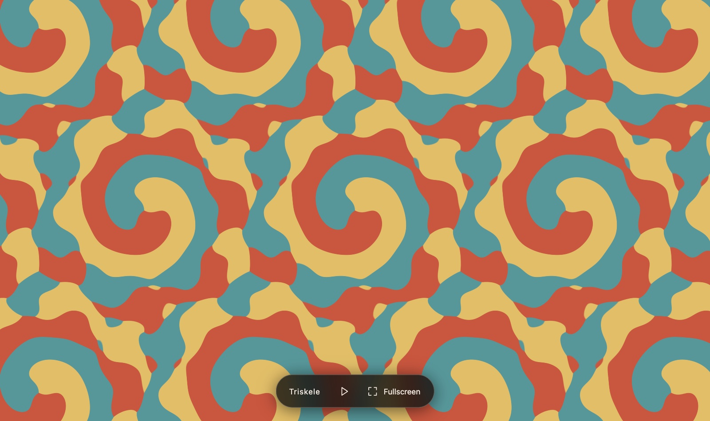
5.2 Gyre — the colour group is entangled
Now move the centre. Let g be a third-turn about a point p that is not a symmetry centre of the field, and paint each point by whichever member of its g-orbit leads, each read at its own third of the cycle:
The chosen centre is p = (1/18, 1/9) in lattice coordinates, which sits 0.0962 lattice lengths — 6.35 nodes — from the nearest threefold centre of the field: far enough that none of the field's own threefold structure survives, close enough that the three sampled points stay inside one recognisable neighbourhood, which is what keeps the regions large and legible. The turn's translation part is a whole number of nodes, so g maps saved nodes to saved nodes and every claim below is checked in exact integer arithmetic on the raw samples, with no interpolation anywhere.
Why the whole triple is a symmetry while no part of it is. Reindexing the same way with no time shift gives colour(gx, t) = colour(x, t − T/3) − 1, so the turn alone is a colour symmetry if and only if the third-period shift alone is: the two halves stand or fall together, and generically both fall. And once the entangled operation is a symmetry, the same operation without the colour cycle cannot be one — that would force colour = colour − 1. The measurements, over all 96 × 4,356 = 418,176 saved node-frames:
| Generator | Colour | Time | Agreement |
|---|---|---|---|
| translation by a lattice vector | none | 0 | 1 |
| third-turn g about p | −1 | T/3 | 1 |
| two-thirds turn g² about the same p | +1 | 2T/3 | 1 |
| g alone, no time shift | — | — | not a symmetry: 0.428446 at best over the three relabellings |
| a T/3 shift alone, no turn | — | — | not a symmetry: 0.428446 at best |
| g with T/3 but no recolouring | — | — | not a symmetry: 0.000000 — it agrees nowhere |
| g with T/3 and the colours stepped the other way | — | — | not a symmetry: 0.000000 |
| the 120° turn about the lattice origin with 2T/3 (Triskele's own relation) | — | — | not a symmetry: 0.521233 |
| the field's own sixfold relation, 60° with 5T/6 | — | — | not a symmetry: 0.711619, and only with a colour transposition |
| any other third-turn that cycles the colours, about any other centre | — | — | not a symmetry: 0.896316 at best — half a node off p |
| any of the six mirrors, at any centre, shift and recolouring | — | — | not a symmetry: 0.476974 at best |
The exact symmetry is not isolated, and the page says so: move the turn centre half a node off p and 89.6 % of the picture still agrees; keep the centre and move the time shift one saved frame off T/3 and 96.97 % agrees — the latter with no mystery in it, since one saved frame out of 96 changes the picture by 3 %, and the plain identity at a one-frame shift scores the same figure to the last digit. Which is why the test is exactness, never agreement. An exhaustive search over all 12 point operations × 4,356 lattice translations × 96 time shifts × 6 colour permutations = 30,108,672 combinations, run twice by two methods that share nothing but the colours themselves — a brute-force exactness sweep and a Fourier cross-correlation computing the full agreement of every combination at once — finds exactly three: the identity, and the two entangled turns.
So the colour-preserving subgroup is exactly the lattice translations, p1, and the group of the picture is p3 — the catalogue's g225, orbifold 333, the p3 entry whose threefold turn carries a third of a period. The homomorphism to ℤ₃ is onto with kernel p1, so in this group the three colours are only ever cycled, never fixed and never swapped. In the terms of §4.1 this is the m = n = 3 regime with an unusually clean kernel; in the terms of §4.2, the kernel of the time-shift character is trivial and the colour group is fully entangled — which the corollary says is possible only because ℤ₃ is cyclic. Pleasingly, g225 is also the catalogue entry of the underlying orbit: the colouring reproduces the wave's own 3₁ screw, but about a point where the wave has no symmetry at all, and pays for it with a colour cycle.
The visible consequence is the nicest part. Because the turn alone is not a symmetry, waiting T/3 does not recolour the picture where it stands — it genuinely turns it, a third of a turn clockwise about p, and recolours it. Over one eight-second loop the whole pattern makes one full turn about a point that is the centre of nothing. And since g fixes p, at the centre the law has nothing left to say but colour(p, t + T/3) = colour(p, t) − 1; measured at twelve phases, from the reconstruction and independently from the middle pixel of the rendered frame, the colour there runs 2, 1, 1, 1, 1, 0, 0, 0, 0, 2, 2, 2 — stepping back exactly one place every T/3, three times a loop, with no exceptions. Zoom all the way in and the screen becomes one flat colour that steps three times per loop: the symmetry with its spatial part switched off.
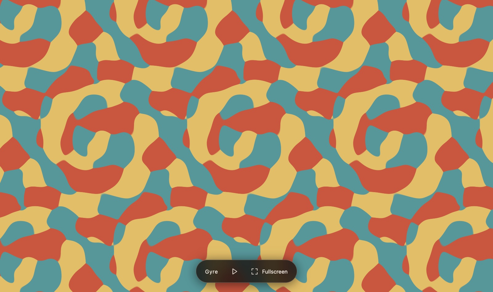
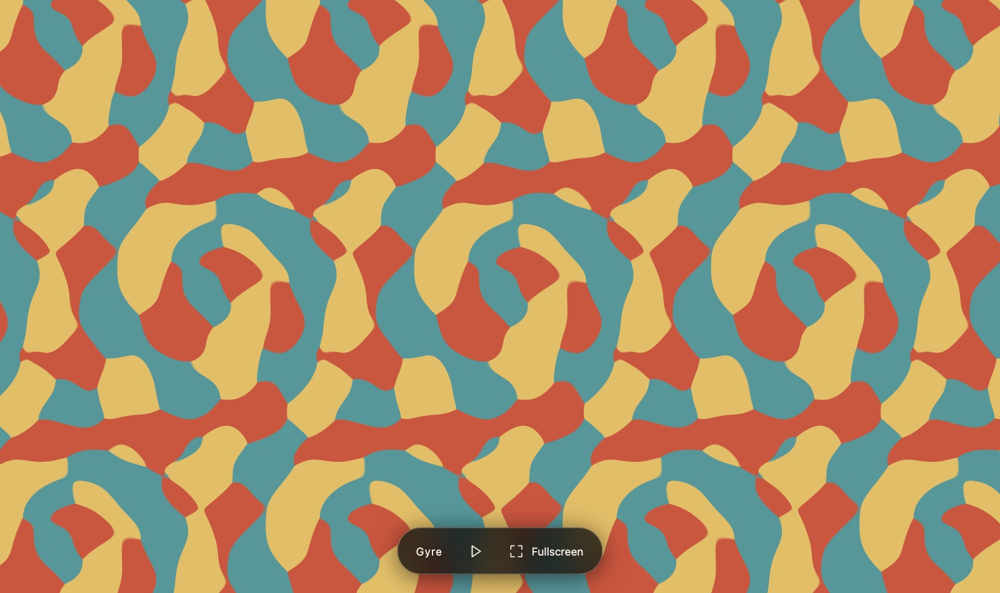
Only 52.9 % of nodes agree with Triskele's own colouring of the same field, so it is genuinely a different picture and not a recolouring of the same one. Twelve further fields were built and measured before this one was chosen, together with a sweep over 2,178 candidate turn centres, scored on colour balance, boundary density, speckle and argmax ties; one otherwise attractive centre was rejected on purpose because there the field's sixfold relation reaches the colouring and the colour-preserving subgroup is no longer p1 — Triskele's relation comes back in disguise.
5.3 Trefoil — the colour group is S₃
Both pages so far only ever cycle their colours — the colour group is ℤ₃ on each — and on Gyre, where it is welded to time completely, §4.2 says it could not have been anything else. The third page is the other side of that theorem, and it is YB's own question made into a picture — does entanglement require a cyclic permutation? Same wave, same three colours, a third rule, and this time the colour group is the smallest non-cyclic one there is. Let b = (1/3)a₁ + (2/3)a₂, the step from one class of threefold centres of the lattice L to the next, and paint each point by whichever of its three translates by b leads:
Sliding by b cycles the colours, with no time shift at all. At x + b the three numbers being compared are the same list rotated one place, since 3b is a lattice vector and the field is L-periodic. So colour(x + b, t) = colour(x, t) − 1 exactly — for any field, at any instant, under any reconstruction filter. It is a symmetry you can check in a screenshot: the shapes land on shapes and every region takes the next colour round.
The half-turn with half a period swaps two colours and fixes the third. The wave's own sixfold screw includes U(R180x, t + T/2) = U(x, t), bit-exact on the saved samples, so U(−x + kb, t + T/2) = U(x − kb, t): the same three numbers again, but now the list is reversed rather than rotated. Hence colour(−x, t + T/2) = −colour(x, t) — the transposition that leaves terracotta where it is and exchanges teal and sand. More generally the rotations act on the colour index L′/L ≅ ℤ₃ by ±1, according to how they move b modulo L (R60b ≡ −b, R120b ≡ +b, R180b = −b), while the translations act by addition. So the colour group is the affine group of ℤ₃,
What the theorem forces, and what it leaves to measurement. The character θ̄ of §4.2 settles the shape of the answer before the field is looked at. Its corollary there restricts the requirement to total entanglement, which is already the shape of the answer; the construction and the measurements below supply the “no” itself. Three further consequences fix what an S₃ film may and may not do, and one thing they leave to the field:
- The 3-cycles are always spatial. [S₃, S₃] = A₃, and any homomorphism to an abelian group kills commutators, so A₃ ⊆ ker θ̄ in every S₃-coloured film. The contrapositive in §4.2 says something must be free; for S₃ it is exactly the alternating half.
- The swaps are all or nothing. S₃/ker θ̄ is cyclic of order 1 or 2. Order 1 means every transposition is free as well; order 2 means every one of them carries a time shift that no cleverness can remove. Since ker θ̄ is a subgroup there is nothing in between: a film cannot have one free swap and two entangled ones.
- Waiting alone is constrained separately. The pure time shifts are a normal abelian subgroup, so the recolourings obtainable by waiting form a cyclic normal subgroup of Π — for S₃ that is 1 or A₃ and nothing else. Here it is 1: no non-zero pure time shift is a symmetry at all, so waiting alone does nothing whatever.
- Which of the two holds is left open: it is a fact about the wave, not a theorem. Colour any L-periodic wave that is even in x at every instant by the same rule and the half-turn delivers a swap with no time shift at all — the order-1 case, perfectly legal. The measurement below puts this wave in the order-2 case, which is what the page exists to show.
The measurements are on all 96 × 4,356 = 418,176 saved node-frames, in exact integer arithmetic. Both laws hold with 0 violations and the argmax has 0 ties, so the labelling is everywhere well defined. Taking the entangled law apart, every piece of it fails:
| Generator | Colour | Time | Agreement |
|---|---|---|---|
| translation by a lattice vector a₁ or a₂ | none | 0 | 1 |
| translation by b | −1 | 0 | 1 |
| translation by 2b | +1 | 0 | 1 |
| half-turn about the origin | swap (teal sand) | T/2 | 1 |
| turn by 60° about the origin | swap (teal sand) | 5T/6 | 1 |
| turn by 300° about the origin | swap (teal sand) | T/6 | 1 |
| turn by 120° about the origin | none | 2T/3 | 1 |
| turn by 240° about the origin | none | T/3 | 1 |
| the half-turn alone, any node or half-node centre, any recolouring | — | — | not a symmetry: 0.494447 at best |
| a T/2 shift alone, any translation, any recolouring | — | — | not a symmetry: 0.494447 |
| the half-turn with T/2 but no recolouring | — | — | not a symmetry: 0.333333 — chance exactly |
| the half-turn with T/2 and a 3-cycle instead of the swap | — | — | not a symmetry: 0.333333 |
| the half-turn with T/2 and either other swap | — | — | not a symmetry: 0.000000 — it agrees nowhere |
| any point op, at any node or half-node centre, no time shift, any transposition | — | — | not a symmetry: 0.540375 at best |
| the same, with the time shift anywhere in Θ = (T/3)ℤ | — | — | not a symmetry: 0.540375 at best |
| any pure time shift ≠ 0, any recolouring | — | — | not a symmetry: T/6 0.5404, T/3 0.4154, T/2 0.4944 |
| any of the six mirrors, at any centre, shift and recolouring | — | — | not a symmetry: 0.477531 — the wave is chiral |
| the identity one saved frame off | — | — | not a symmetry: 0.969310 — the nearest miss of all |
Three rows deserve a word. The two 0.494447 figures are equal, and necessarily so: colour(−x, t) = −colour(x, t − T/2) puts the two statistics in bijection, so the two halves of the entangled law stand or fall together — the same argument that governs Gyre's two halves, and here too both fall. 0.540375 is the theorem, measured. It is the best any transposition can be made to look without a genuine time shift, searched over all 12 point operations of the lattice, all 4,356 node translations — which for a point operation is exactly every node and half-node centre — and all three shifts in Θ = (T/3)ℤ that the colour-preserving subgroup could absorb — so the swaps here cannot be had cheaply, and by the dichotomy above that settles all three of them at once. (The same number has a second reading: the wave's own T/6 relation says colour(R60x, t) = −colour(x, t + T/6), so “a sixth-turn with a swap and no time shift” and “a pure T/6 shift with the colours kept” are one statistic, and the test asserts they agree to the last digit.) 0.969310 is why the tests are of exactness and never of agreement: one saved frame out of 96 changes the picture by 3 %, so any exact symmetry composed with a one-frame shift still keeps 97 %.
The exhaustive search. All 12 point operations × all 4,356 node translations × all 96 time shifts × all 6 colour permutations = 30,108,672 combinations, run twice on every test run by two sweeps that share nothing but the colours — a brute-force exactness test, and a Fourier cross-correlation that scores every combination at once. Both find exactly 18, and they are precisely 6 rotations × 3 translation cosets: the identity, R300, R240, R180, R120 and R60 at time shifts 0, T/6, T/3, T/2, 2T/3 and 5T/6, each with the translations 0, b and 2b. All six colour permutations occur, so the colour group really is the whole of S₃; every transposition sits at T/6 modulo Θ, the unique element of order 2 in ℝ/Θ, so θ̄ is onto ℤ₂ with kernel A₃ — the theorem's picture realised exactly. The colour-preserving subgroup is {1 at 0, R240 at T/3, R120 at 2T/3} together with the coarse lattice: g225, p3 with the 3₁ screw — exactly Gyre's film group, though about the lattice origin rather than about a point of no symmetry. The full film group is g247, p6 with the 6₅ screw, on the finer lattice L′, and the index is 6 = 2 (point) × 3 (translation), so only one sixth of the group leaves the colours alone. And g247 is also the catalogue entry of the underlying wave: the colouring keeps the wave's own sixfold screw, adds the translations by b and 2b that the wave does not have, and pays for all of it in colour.
Every colour owns exactly a third of every single frame — 139,392 of the 418,176 node-frames each, with a per-frame share whose range is [0.333333333333, 0.333333333333]. That exactness is a direct dividend of the theorem: translation by b is an area-preserving bijection of the plane at a fixed instant carrying each colour's region onto the next, and it is precisely the spatial 3-cycle that a non-cyclic colour group forces on us. On Gyre, where nothing is spatial, the per-frame shares wander over [0.3124, 0.3506]. The picture is also the chunkiest of the three: boundary density 0.1013 against Gyre's 0.1037 and Triskele's 0.1076, decisiveness 0.973 standard deviations between winner and runner-up, and a best agreement with the siblings' colourings of the same field of 0.5691 (Gyre) and 0.5273 (Triskele) — three genuinely different pictures on one wave.
Which laws are exact between the nodes, and which are only nearly. The two laws the page is about survive the reconstruction filter untouched: b is a whole number of nodes, so plain tensor-product Catmull–Rom is translation-exact, and the kernel is even in each coordinate, so it is point-reflection-exact too. Measured at 2,400 random off-node points over six phases, the worst discrepancy is 1.1 × 10−15 for the 3-cycle and 1.3 × 10−15 for the swap, with zero colour violations — which is why ?angle=180&phase=0.5 and a shift by b reproduce the home frame pixel for pixel, at any framing: the first with teal and sand exchanged, the second with every colour stepped back one place. The threefold and sixfold laws are different: exact on the saved nodes, but off by 1.8 × 10−4 between them — 0.55 % of the field's standard deviation, about a fifth of one 8-bit level, a fraction of a device pixel of boundary — because a tensor-product kernel is not invariant under a 120° turn. The page ships plain Catmull–Rom and says so, rather than paying three times the fetches for the symmetrised kernel Triskele uses to make a law exact that already holds to a fifth of a colour level; the browser test accordingly checks the threefold law pixel for pixel only at the home framing, where the difference hides inside the antialiased band.
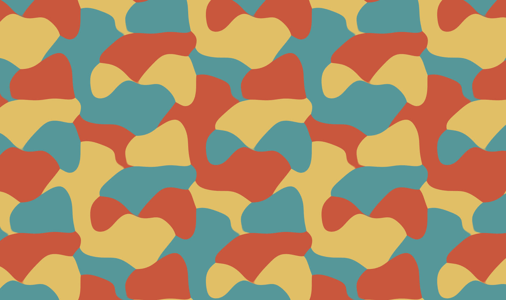
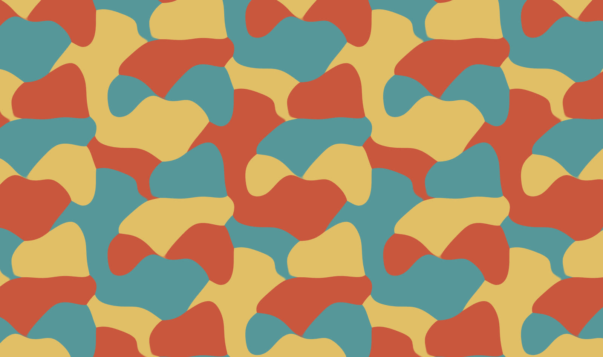
At the centre of the screen the half-turn has nothing left to say but colour(0, t + T/2) = −colour(0, t), and terracotta is the fixed point of that swap — so if the origin were ever terracotta it would have to be terracotta for ever, and it never is. It alternates teal and sand three times a loop, one change every T/6, at all 96 saved frames and all 48 sampled phases. Being honest about what that looks like on screen: the three points sampled there are the wave's own three threefold centres, where U sits within 2.3 × 10−4 of one value, so all three colours meet within a pixel or two of the middle and which of teal and sand holds the exact centre is decided by a margin of 10−6. Unlike Gyre there is no degenerate neighbourhood anywhere else: the three samples stay |b| = 1/√3 apart everywhere, so no disc of the picture moves faster than the rest, and the fraction of pixels flipping colour per frame stays flat across the whole zoom ladder instead of spiking at deep zoom.
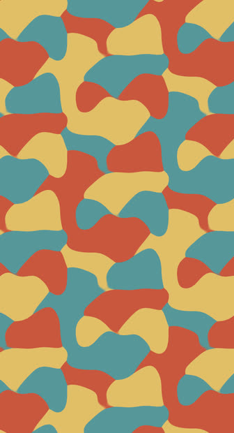
What this answers. YB asked whether entanglement requires a cyclic permutation. It does not: the entangled operation here is a transposition, an element of order two, welded to a turn and a wait so firmly that nothing within 54 % of the picture realises it any other way. What does require a cyclic colour group is entangling everything — the moment every non-identity recolouring needs a time shift, θ̄ is injective and the colour group is trapped inside a circle. So a non-cyclic colour group buys its extra size by giving something back, and S₃ gives back exactly its alternating half: the 3-cycles, which are visible in a single frozen frame. Trefoil is the extreme case of that trade — everything the theorem permits to be entangled is entangled, and everything it forces to be free is free — with Gyre as full entanglement in a group small enough to allow it, and Triskele as none at all.
The generators, drawn on the page. After the deploy YB asked for the generators to be marked on the picture itself, in a notation that carries all three things at once — the turn, the wait and what becomes of the colours. The notation chosen extends the site's clockwork orbifold symbol by one decoration: a gyration of order n whose anticlockwise generator advances the film by k/n of a period and permutes the colours by σ is written nk(σ), with σ in cycle notation over the colour digits 0, 1, 2 (terracotta, teal, sand — the indices the site's Generator | Color | Time tables already use). The superscript is omitted when σ is the identity, exactly as the subscript is omitted when k = 0, so every existing undecorated symbol keeps its meaning; a translation is τ(σ). The consistency rule gains a second channel: in every relation of the orbifold group the time subscripts must sum to a whole number of periods and the colour superscripts must compose to the identity — the one statement that the relation holds in the full spacetime-colour group. Trefoil's symbol is
| Generator | Centre | Rotation | Time | Colour |
|---|---|---|---|---|
| α = 65(12) | (0, 0) | 60° anticlockwise | 5T/6 | teal ↔ sand, terracotta fixed |
| β = 32(021) | (1/3, 0) | 120° anticlockwise | 2T/3 | each colour steps back one |
| γ = 21(01) | (1/3, 1/6) | half-turn | T/2 | terracotta ↔ teal, sand fixed |
| τ = τ(021) | by b = (1/3, 2/3) | none — a slide of one motif | none | each colour steps back one |
Each mark is a coin and a chip: the coin is the site's own rotation-order glyph with a short anticlockwise arc for the sense of the turn and a violet dial on its rim filling k/n of the circle clockwise from twelve — a clock face, so it always reads as the wait, never as the turn; the chip is a small disc with the three colours at fixed stations and either three chasing arrows for a cycle or one double-headed arrow through the two dots it exchanges, the fixed colour ringed. Marks sit at every centre of their class in view, thin out as the zoom pulls them together, and are glued to the pattern through the same transform the shader uses, so they ride along under a pan, a pinch, a turn and a glide. A Generators checkbox (or G, or ?generators=0) hides them; Notation (or N) opens a legend with the symbol, this table and the anatomy of a mark. One further reading falls out of the periodic set: at each of the three classes of sixfold centre the colour its swap fixes is the colour that never occurs there — never terracotta at the origin, never sand at b, never teal at 2b — the other two alternating 48 frames each. The colour superscript is defined only on Trefoil's page and in its README for now; whether it belongs on the site's central notation page is an open decision.
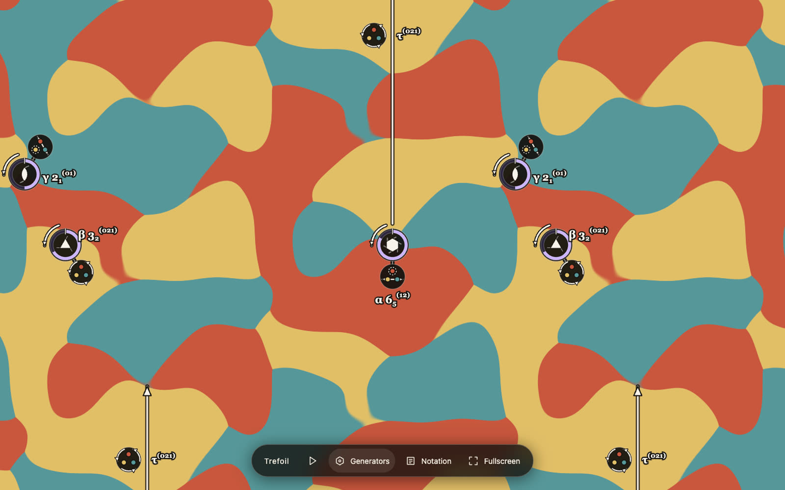
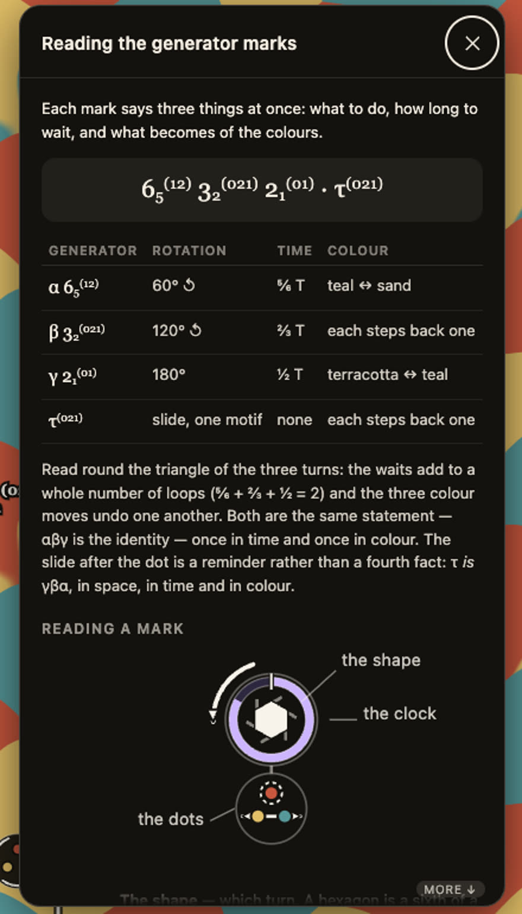
5.4 Viewer improvements
Three changes went into the viewers this week, each prototyped on a copy of one page as a small patch with no new dependencies or assets, and all three are now shipped by all three viewers.
Pinch and turn at the same time on a Mac trackpad. macOS sends a trackpad pinch and a trackpad two-finger turn as two different event types, and WebKit forwards a magnify event carrying a scale with the rotation zeroed, and a rotate event carrying a rotation with a neutral scale. Applying both fields of every event lets the two streams cancel — a pinch that keeps snapping back to no turn, and a turn that keeps snapping back to no zoom — which is why they only ever worked one at a time. The viewers now keep two independent accumulators, taking each quantity only from an event that actually carries it, and pin the view with both every time. An event carrying neither quantity is genuinely ambiguous — a pinch returned to exactly 1× and a turn returned to exactly 0° are indistinguishable — so the kind of stream is latched over the whole gesture: if some event has ever named both, every field of every event is applied; if only one quantity has ever been named, a silent event is that quantity returning to neutral; and if both have been named but never together, a silent event is held, because reading it as both would throw the other accumulator away mid-gesture. iPhone and iPad are untouched, since the handler bails out while any pointer is down. Two fallbacks for a mouse or a trackpad whose rotate gesture never arrives: Option + wheel turns about the pointer while the wheel alone zooms, and the turn and zoom keys now repeat while held, so one hand can hold ] while the other pinches.
There is a diagnostic, because the remaining uncertainty is which pattern a given Safari actually sends. Press S and, once a gesture has happened, the stats overlay reads for example gesture raw 1.000/30.000 · flat 2s 2r both 0 of 4 · kept 1.400×/30.0°: raw is the last event's own scale and rotation, flat Ns Mr counts the events since the gesture started that named no scale and no rotation, both K those that named both, and kept is where the two accumulators stand. flat 2s 2r both 0 of 4 is the split Mac stream; flat 0s 1r both 3 of 4 is a Safari that accumulates both.
Momentum on the zoom and the turn. YB asked for it on the Trefoil deploy — “give some momentum to my pinch and zoom operations… it should be a little bit elastic and continue going for a bit” — and it shipped there first and was ported to Gyre and Triskele today. Until now only the one-finger pan had inertia; now everything a gesture can move keeps moving when it is let go, and a two-finger gesture that panned, zoomed and turned at once carries on doing all three as one glide. The whole of it is a module with no DOM, no clock and no animation frame in it — a release velocity read from a list of samples, and a glide state advanced by a number of seconds — which is what lets a node test check the behaviour rather than the wiring. The release velocity is the mean over the gesture's last 100 ms, first sample to last divided by the time from the first sample to the release, so hesitating before letting go damps the throw; each channel then has its own decay, floor and cap (pan 0.35 s, 60–6000 px/s; zoom 0.22 s, ×1.35–×6 a second; turn 0.25 s, 17–200°/s), and the caps mean a glide can add at most 2100 CSS px of pan, a factor of 1.49 of zoom or 50° of turn. The zoom is integrated multiplicatively, so a throw feels the same at 60 px per repeat and at 6000, and the turn is measured the short way round the circle so that two fingers crossing the atan2 seam do not read as a whole turn in one frame. A node test asserts that the one-finger fling is bit-identical to the code that shipped before momentum, velocity and displacement, on every frame of the glide.
Four guards keep it from running away: a release more than 80 ms after the last movement throws nothing, and so does a pause of more than 50 ms inside the window, which cuts the history there rather than averaging across it; a scale or a turn needs more than 24 ms of measured movement, which rejects a burst of events arriving in the same instant and nothing else; the fingers of a pinch never lift together, so what the pinch was doing is kept for 120 ms and a second finger following inside that is treated as one release; and any new input at all — a finger, the wheel, a key, the reset button — cancels the glide, while a viewer who asks for reduced motion gets no glide on any gesture, including the pan, which used to glide regardless. At the zoom limits the glide gives rather than stopping dead: it passes the limit by up to 4 %, by as much of that as it still had speed to spend, and is returned over 150 ms along a quarter sine — a cubic leaves the limit about twice as fast as the glide arrived at it, which reads as a pop — landing on the limit exactly. Only a glide may leave the allowed range, and only for those 150 ms; every hand-made zoom still stops flat against the limit, and a tap in the middle of the excursion lands the view on the limit rather than leaving it stretched. A thrown turn is aimed at a sixth of a turn: where the decay would end up is worked out at the release and the nearest sixth to that becomes the asymptote, so the turn eases onto a lattice angle with the same exponential instead of being corrected at the end — never by more than half a sixth, never by more than the throw itself, and never onto a sixth behind where the fingers let go. A burst of wheel events glides too, gently: three tenths of the measured rate, six tenths for a trackpad pinch, capped at half of what a finger may throw, so one notch of a mouse wheel still moves the view exactly as far as it asks for and no further.
Temporal anti-aliasing: the shutter. A display holds each frame for a whole frame interval, but a drawn frame is one instant; when something crosses several pixels between one frame and the next that arrives as a row of hard steps instead of a smear. Every other candidate was measured and eliminated first — the phase is taken from the animation-frame timestamp and its cadence is stable to 0.05 ms, no frame is drawn twice or skipped, the texture blend and upload cost 0.0–0.1 ms — leaving sample-and-hold judder as the cause. Measured, the picture moves 0.33 px per 60 Hz frame at the home framing and 2.8–4.5 px zoomed in, which is exactly where the report of jumpiness came from and is more than the one-pixel spatial antialiasing can cover.
So each displayed frame is now integrated over a shutter: three equally spaced sub-samples filling a fraction of a frame interval centred on the frame's own instant, each carrying its own phase and its own view, so that the animation, a drag, an inertial glide, a pinch and a two-finger turn are all integrated by the same three taps. The fragment shader averages the colours of the sub-samples, never the field: averaging the field would leave one hard boundary, only displaced, while averaging the colours carries the boundary across every pixel it swept, which is what a camera records. A node test proves that distinction pixel by pixel. Four properties make it safe: every sub-sample runs the identical kernel, so the entangled law holds per sub-sample and the symmetry is untouched; a still picture is bit-identical to one drawn without it, which is what lets the pixel comparisons stay exact; it is spent only where it can do something — the gate is on the smear the shutter would draw and not on the travel, so a picture moving travel CSS pixels a frame is smeared over travel × shutter of them and under 0.75 px of smear there is nothing worth three taps, which at the shipped 0.3 shutter asks for 2.5 CSS pixels of travel a frame and leaves the home view paying nothing; and it is the quality governor's first rung, above the resolution ladder, so a GPU that cannot hold the cadence loses the motion blur before it loses pixels.
| input | effect |
|---|---|
| drag / one finger | pan, endlessly, with a glide on release |
| two fingers | pan, zoom and turn together, all three gliding on release; a turn within 4° of a sixth snaps, and a thrown one is aimed at the nearest sixth |
| trackpad pinch and two-finger turn (Safari) | zoom and turn, simultaneously, gliding on release |
| wheel · Option + wheel | zoom about the pointer, with a gentle glide after a burst · turn about the pointer |
| a glide at a zoom limit | passes it by up to 4 % and returns to it over 150 ms, landing exactly on it; any new input cancels the glide and lands it on the limit |
| reduced motion | no glide at all, on any gesture including the pan |
| + − · ] [ | zoom 1.25× a press, 1.05× a repeat while held · turn 15° a press, 60° with Shift, 3° a repeat while held |
| arrows · 0 · Space, F, S | pan · home view · pause, fullscreen, stats |
| G / the Generators checkbox · N / Notation | Trefoil only: the generator marks on or off, remembered per browser (?generators=0 shares a view without them) · the legend that explains them |
?taa=0…5 | shutter sub-samples per displayed frame; 0 or 1 turns it off (default 3) |
?shutter=0…2 | the shutter's width as a share of a frame interval (default 0.3) |
?motion=… | how wide the smear must be, in CSS pixels, before the shutter is worth paying for — so the picture must move motion / shutter px a frame, 2.5 px at the defaults (default 0.75) |
?scale= ?x= ?y= ?angle= ?phase= ?play=0 ?dpr= ?stats=1 | as on the sibling viewers |
Shutter width, and a change made today. The measurements were made at a full frame interval, which is the box filter the sampling asks for: consecutive frames' sub-samples then tile the timeline with no gap and no overlap, i.e. the animation is drawn at three times the frame rate and box-filtered down to it. At that width, the share of pixels making a whole colour flip from one 60 Hz frame to the next falls from 0.308 % to 0.123 % at 2,400 px per repeat, from 0.868 % to 0.303 % at 8,000 px per repeat, and from 3.4 % to 1.4 % during a gentle drag — while the home framing, where nothing needs integrating, is unchanged. Two honest notes on that: the count of pixels making a small change rises by a tenth to a fifth, because motion blur is exactly the trade of one hard step for three soft ones; and the panning rows are why the shutter integrates the view at all, since a gentle drag throws up an order of magnitude more judder than the animation ever does. At YB's request the default was then cut by 70 %, from 1.0 to 0.3 of a frame interval, for a crisper picture — ?shutter=0.5 is the 180° film convention and ?shutter=1 the full box filter the table was measured with. All three viewers ship the gesture fix, the momentum, the shutter and the new 0.3 default; the figures in the paragraph above were measured at ?shutter=1, which is still reachable by URL, so they describe the full box filter rather than what any of the pages draws by default. Plume and Plume Monochrome belong to another session's work: the same patches apply to them — the gesture fix and the momentum verbatim, and the shutter more cheaply still, since their colouring is a continuous ramp rather than a hard argmax, so the sub-phases can be averaged on the CPU into the single existing texture with no shader change and no extra GPU cost — but none of it has been applied to them yet.
And the gate that goes with the narrower shutter. Cutting the width without touching the gate would have left the shutter switching on where it can no longer draw a smear worth having, so the gate was moved onto the smear — travel × shutter ≥ motion rather than travel ≥ motion — which is Trefoil's rule and is now the rule on all three viewers. At the 0.3 default it asks for 2.5 CSS pixels of travel a frame instead of 0.75, which the animation alone reaches at about 2,730 CSS pixels per lattice length on Trefoil — 1,575 px per motif of the finer lattice it paints — and, by the same arithmetic on each page's own measured boundary speed, at about 2,790 px per repeat on Gyre and 2,860 on Triskele, against the 818, 837 and 857 px thresholds the full box filter had. Trefoil's browser test pins both sides of it, checking that the shutter is still off at 2,400 px per repeat and on at 3,000, and that ?shutter=1 brings it forward to 2,400 again. Below those framings nothing is lost: what engages the shutter at ordinary zoom is the view's own motion — a drag, a glide, a pinch — the moment it passes 2.5 px a frame, and press S and the overlay says which is in force.
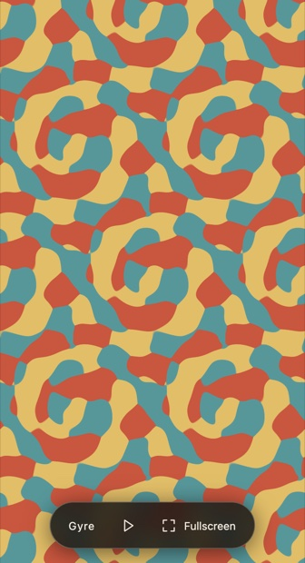
6. Background notes on the other things mentioned
Each of these was raised in passing and checked afterwards against a source that could be opened. Where a claim on the call was approximate, the verified form is given; where something could not be verified, that is stated.
6.1 The Magic Theorem, and why it is two-dimensional
The theorem as the book states it: the signatures of plane repeating patterns are precisely those with total cost 2. A mirror boundary costs 1, a gyration of order n costs (n−1)/n, a mirror corner of order n costs half that; ∗632 costs 1 + 5/12 + 1/3 + 1/4 = 2. The cost is a repackaging of the Euler characteristic of the quotient orbifold, derived from Euler's map theorem on the sphere: cost 2 is orbifold Euler characteristic 0, which is what a Euclidean plane pattern requires, while spherical patterns cost less and hyperbolic ones more. So the “magic” is two-dimensional Gauss–Bonnet bookkeeping, exactly as CGS described it. Two- and p-fold colourings in two dimensions are already solved in the same book by exactly the method he described to YB — chapters 10 to 14, “Presenting Presentations”, “Twofold Colorations”, “Threefold Colorings of Plane Patterns”, “Other Primefold Colorings”, “Searching for Relations”.
One correction to an earlier draft of these notes: the book does not state the classical figure of 46 and never uses the word “counterchange”. The classical enumeration of the 46 two-colour plane patterns is H. J. Woods, The geometrical basis of pattern design, Part IV, J. Textile Inst. Trans. 27 (1936), T305–320. Whether the book's list is literally the same 46 is not asserted here.
6.2 “Two Fields medals”, and “impossible” in four dimensions
Accurate in substance. William Thurston received the Fields Medal for 1982, for work on the topology of 2- and 3-manifolds; his geometrisation conjecture asserts that every 3-manifold decomposes into pieces each carrying one of eight geometries. (The 1982 congress was postponed because of martial law in Poland and the medals were presented in 1983.) Grigori Perelman received the Fields Medal in 2006, which he declined, for the proof of the Poincaré conjecture and full geometrisation via Ricci flow. For four dimensions: A. A. Markov showed in 1958 that the homeomorphism problem for closed 4-manifolds is algorithmically unsolvable, by reduction to the unsolvability of the triviality problem for finitely presented groups.
The qualification that matters here: “impossible in four dimensions” applies to the topological classification of manifolds, not to crystallographic groups. By Bieberbach's theorems the number of n-dimensional crystallographic groups is finite for every n, and the four-dimensional ones have been enumerated — 4783 affine space-group types, of which 111 form enantiomorphic pairs, giving 4894 when those are counted separately. The book itself says so: “The four-dimensional space groups have also been enumerated. However, their enumeration takes up an entire book.”
6.3 Fibrifolds, and 35 + 184 = 219
The source paper behind the tables is Conway, Delgado Friedrichs, Huson and Thurston, “On Three-Dimensional Space Groups” (2001; preprint arXiv:math/9911185, submitted 23 November 1999, 26 pages). VB's recollection of “Conway and some guy from Australia” and CGS's “Thurston and Conway” are each partly right: Olaf Delgado-Friedrichs is at the Australian National University, which is very likely the source of VB's memory. There are 230 space group types counting the 11 enantiomorphic pairs twice, 219 up to affine equivalence, which the book splits as 35 irreducible plus 184 composite. The alias problem — some composite groups have more than one fibrifold name because they have more than one invariant direction, never more than three — matters directly to the animation question, since one of those directions may not be the time direction.
On the database CGS remembered: the preprint's own captions describe Tables 1, 2a and 2b and nothing else, and a full-text search for “database”, “http”, “ftp”, “web”, “www”, “electronic” and “available at” returns no hits at all. His recollection could not be verified from the preprint; it may refer to something else, which was not chased down.
6.4 “Two guys in the 19th century”
The exchange this checks, at 07:16:55–07:17:16, was VB's: “the two guys in the 19th century who did it with no computers”, and “they didn't even know about atoms at that time”; CGS added that they did the three-dimensional ones before the two-dimensional ones, which “makes no sense”.
The 230 space groups were derived independently and almost simultaneously around 1889–1891 by Evgraf Fedorov and Arthur Schoenflies, who reconciled their differing lists — Fedorov initially 229, Schoenflies 227 — by correspondence and settled on 230. William Barlow published in 1894, and the two sources consulted disagree about him: MacTutor says he knew of the earlier papers and obtained a false result of 229 by a different method, while his own encyclopaedia article says only that his results appeared after the other two had independently announced theirs. On MacTutor's account the frequent claim of three fully independent discoveries is not accurate; that is the reading taken here, and it is a contested point.
CGS's observation that the three-dimensional groups came before the two-dimensional ones is correct — and Fedorov did both: the proof that there are only 17 plane groups was first carried out by Fedorov in 1891 and then derived independently by George Pólya in 1924. Worth knowing given the Escher thread: it was Pólya's 1924 paper, with one drawing per group, that Escher encountered and from which he built his own colour-symmetry system.
6.5 Shubnikov, the 1651, and the book VB recommended
Aleksei Vasilievich Shubnikov (1887–1970) founded the Institute of Crystallography of the USSR Academy of Sciences in 1944 — the institute, not a university, was named after him, after his death. He introduced multiple antisymmetry in 1944 and derived the 58 crystallographic antisymmetry point groups.
CGS's guess that “some crystallographer has surely done it” is correct for two colours. The magnetic, or Shubnikov, or black-and-white space groups number 1651: 230 colourless + 230 grey + 1191 black-and-white, of which 674 have ordinary Bravais lattices and 517 black-and-white ones. The first complete derivation is normally credited to A. M. Zamorzaev (1953 thesis; 1957); Belov, Neronova and Smirnova derived and tabulated them independently in 1955–57 — their paper is literally titled “1651 Shubnikov groups” — and the BNS setting still carries their initials. The antisymmetry operation is exactly “swap the two colours”, and in physics it is time reversal, which is a pleasing coincidence given YB's question. But the 1651 classify two-coloured 3D groups with no distinguished axis; a looping animation additionally requires the group to preserve a time direction, so the right object is the intersection — two-colourings of the 184 composite groups, indexed by the coupling data, which is exactly the programme CGS sketched. No record of that intersection was found in the literature searched. For more than two colours, the three-coloured three-dimensional space groups are D. Harker's (1981), and R. L. E. Schwarzenberger's “Colour symmetry” (Bull. LMS 16, 1984) is the general survey.
The book: A. V. Shubnikov & V. A. Koptsik, Symmetry in Science and Art, Plenum Press, New York, 1974 — translated by G. D. Archard from Simmetriya v nauke i iskusstve (Nauka, Moscow, 1972) and edited by David Harker; ISBN 0-306-30759-6. It covers dichromatic and polychromatic symmetry, which is exactly what VB praised it for. Page counts differ between catalogue records, so none is stated here. Also worth knowing: Shubnikov, Belov and others, Colored Symmetry (Pergamon, 1964) — arguably even closer to what YB is after.
6.6 The Poincaré polyhedron theorem
VB's suggestion, checked in two sources read directly: a polyhedron equipped with side-pairing isometries satisfying a completeness and a cycle condition is a fundamental domain for the group they generate, and yields a presentation of that group — the side-pairings are the generators, and the reflection relations together with the cycle relations form a complete set of relations. That is exactly the mechanism VB described. It is standard for Fuchsian and Kleinian groups; the extension to Euclidean 3D groups with a fundamental polyhedron is stated here as the natural analogue and was not verified against a source. The practical note is that this is a genuinely usable route to the relations CGS said he did not have: a fundamental domain for a composite space group can be taken as a prism over one for the horizontal plane group, and the edge cycles of that prism yield the relators in terms of the coupled generators — the same presentation §3.5 builds from the couplings directly.
6.7 arXiv, AI-generated submissions, and the advisor
YB's remark that his former PhD advisor now heads arXiv's CS section matches the press coverage of the May 2026 policy, which names Thomas G. Dietterich as chair of the computer-science section — a name taken from that press coverage, not from anything said on the call; his own page claims only “lead moderator for the machine learning part of CoRR”, so the chairmanship is sourced to the press rather than to a first-party page. A co-authorship is verified in the published record — Training Conditional Random Fields via Gradient Tree Boosting, Dietterich, Ashenfelter and Bulatov, Oregon State, ICML 2004 — but the supervision relationship itself is YB's own statement and was not independently verified. Two policies are relevant to the provenance discussion. From 31 October 2025, review articles and position papers submitted to arXiv CS must have completed peer review first, the stated motivation being a flood of submissions worsened because generative models make papers that introduce no new results fast and easy to write. From 16/17 May 2026, submissions showing “incontrovertible evidence that the authors did not check the results of LLM generation” — hallucinated references, leftover model meta-comments, fabricated tables — can trigger a one-year ban. It is not a ban on using AI tools for drafting, editing or analysis. arXiv's answer to the problem is therefore author accountability rather than provenance labelling, which is directly relevant to YB's proposal and to CGS's “losing battle” reply.
6.8 The January meeting
VB's “MA meeting in January” is almost certainly the Joint Mathematics Meetings, of which the Mathematical Association of America is a partner and where MAA contributed-paper sessions run. JMM 2027 runs Tuesday 12 – Friday 15 January 2027 in Chicago. The identification is an inference from context — the recording is unclear and VB never said “JMM” — and the contributed-paper abstract deadline was not found in the searches run.
6.9 The Escher exhibition and the rights
Mathematics and the Art of M.C. Escher, National Museum of Mathematics, New York, 1 October 2026 – 8 February 2027, with a free opening celebration on 1 October: more than 60 prints, drawings, original woodblocks and other objects, produced by the M.C. Escher Foundation and PANART Connections. CGS's “opens on the 1st, maybe the 2nd… open through February” is accurate. Doris Schattschneider's role could not be verified from public sources — the museum's page names no curator, only the producers — though she is the pre-eminent Escher–mathematics scholar and the statement is plausible. It is recorded here as unverified. CGS is the museum's outreach mathematician.
The rights: the intellectual property in Escher's work, and ownership of the M.C. Escher Company in the Netherlands, were acquired — reported 1 December 2023 — by Federico Giudiceandrea, an Italian engineer, and Salvatore Iaquinta, based in California, both long-standing collectors, whose stated aim is “to make M.C. Escher's work accessible to an ever-wider public, also using new technologies and in collaboration with museums and cultural institutions all over the world”. CGS's understanding that they grant rights free of charge for non-profit use could not be verified from any published source: the published statements about wide accessibility are consistent with it but do not state it, and the rights-holder's own site carries a conventional all-rights-reserved notice. Anyone acting on the high-resolution Escher animation idea should confirm terms directly with the company or foundation.
6.10 SymPix, SymmHub, and the 1999 result
SymmHub is public: “a platform for creating symmetry-based applications, and a small collection of such apps”, created by Vladimir Bulatov and Chaim Goodman-Strauss with assistance from Scott Vorthmann. Listed apps include a minimal sample, SymPix (symmetry from pictures), SymSim with the Gray–Scott equation, SymSim with Ginzburg–Landau, SymChaos, and — under development — the Orbifold app for general hyperbolic orbifolds that occupied most of the meeting, plus a “Groups (subgroup enumeration playground)”. That last is worth noting next to VB's counter-proposal that AI had already written code to generate the subgroups of a group given by generators and relators. The two SymSim PDE apps also fit VB's remark that the brush tool survives from code he wrote for a partial-differential-equation project. CGS's own earlier result, the one that primed him to recognise the construction, is the 1999 En paper discussed in §2.3.